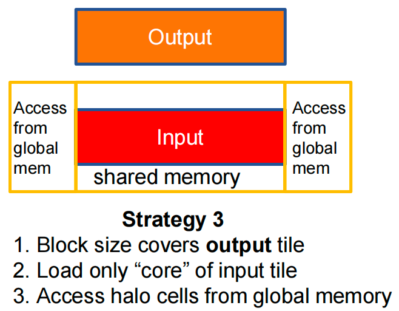
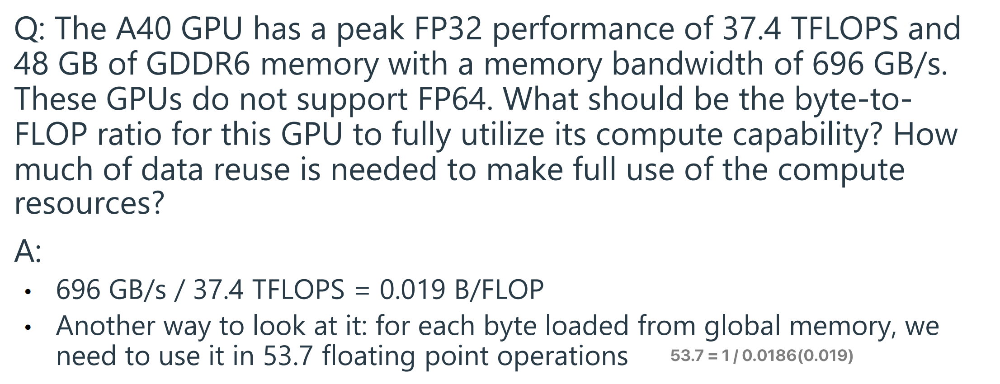

ECE408/CS483 Applied Parallel Programming¶
约 20249 个字 1190 行代码 176 张图片 预计阅读时间 82 分钟
https://canvas.illinois.edu/courses/60979/assignments/syllabus
1 Introduction¶
CPU(central processing unit)
GPU(graphical processing unit)
Post-Dennard technology pivot ‚Äì parallelism and heterogeneity¶
The Moore’s Law (Imperative) drove feature sizes down, doubling the number of transistors/unit area every 18-24 months
- Exponential increase in clock speed
Dennard Scaling (based on physics) drove clock speeds up
- ended around 2005-2006
multicore: execution speed of sequential programs
many-thread: execution throughput of parallel applications
CPU vs GPU¶

| CPU | GPU |
|---|---|
| A few powerful ALUs(Arithmetic Logic Unit) | Many small ALUs |
| Reduced operation latency | Long latency, high throughput |
| Large caches | Heavily pipelined for further throughput |
| Convert long latency memory accesses to short latency cache accesses | Small caches |
| Sophisticated control | More area dedicated to computation |
| Branch prediction to reduce control hazards | Simple control |
| Data forwarding to reduce data hazards | |
| Modest multithreading to hide short latency | A massive number of threads to hide the very high latency! |
| High clock frequency | Moderate clock frequency |
| latency-oriented 延迟导向 | throughput-oriented 吞吐量导向 |
CPUs for sequential parts where latency hurts
- CPUs can be 10+X faster than GPUs for sequential code
GPUs for parallel parts where throughput wins
- GPUs can be 10+X faster than CPUs for parallel code
Parallel Programming Frameworks¶
[!NOTE]
Why GPUs?
Why repurpose a graphics processing architecture instead of designing a throughput-oriented architecture from scratch?
- Chips are expensive to build and require a large volume of sales to amortize the cost
- This makes the chip market very difficult to penetrate
- When parallel computing became mainstream, GPUs already had (and still have) a large installed base from the gaming sector
Parallel Computing Challenges¶
Massive Parallelism demands Regularity -> Load Balance
Global Memory Bandwidth -> Ideal vs. Reality
Conflicting Data Accesses Cause Serialization and Delays
- Massively parallel execution cannot afford serialization
- Contentions in accessing critical data causes serialization
Parallel Computing PitfallÔºàÈô∑Èò±Ôºâ¶
Consider an application where:
- The sequential execution time is 100s
- The fraction of execution that is parallelizable is 90%
- The speedup achieved on the parallelizable part is 1000×
What is the overall speedup of the application? $$ t_{parallel}=(1-0.9)\times 100s +\frac{0.9 \times 100s}{1000}=10.09s\ speedup=\frac{t_{sequential}}{t_{parallel}}=\frac{100s}{10.09s}=9.91\times \text{（9.91为倍数）} $$
Amdahl's Law¶
阿姆达尔定律：处理器并行运算之后效率提升的能力

The maximum speedup of a parallel program is limited by the fraction of execution that is parallelizable, namely, \(speedup<\frac{1}{1-p}\)
2 Introduction to CUDA C and Data Parallel Programming¶
Types of Parallelism¶
| Task Parallelism | Data Parallelism |
|---|---|
| Different operations performed on same or different data | Same operations performed on different data |
| Usually, a modest number of tasks unleashing a modest amount of parallelism | Potentially massive amounts of data unleashing massive amounts of parallelism(Most suitable for GPUs) |
 |
 |
CUDA/OpenCL Execution Mode¶
Integrated Host +Device Application(C Program)
- The execution starts with host code (CPU serial code). 主机代码在CPU上运行
- When a kernel function is called, a large number of threads are launched on a device to execute the kernel. All the threads that are launched by a kernel call are collectively called a grid.
- These threads are the primary vehicle of parallel execution in a CUDA platform
- When all threads of a grid have completed their execution, the grid terminates, and the execution continues on the host until another grid is launched
- Host Code (C): Handles serial or modestly parallel tasks
- Device Kernel (C,SPMD Model): Executes highly parallel sections of the program GPU上运行设备代码
Threads¶
A CUDA kernel is executed as a grid(array) of threads
- All threads in the same grid run the same kernel
- Single Program Multiple Data (SPMD model)
- Each thread has a unique index that it uses to compute memory addresses and make control decisions
Thread as a basic unit of computing
- Threads within a block cooperate via shared memory, atomic operations and barrier synchronization. 块内的线程通过共享内存、原子操作和屏障同步进行协作。
- Threads in different blocks cooperate less.


- Thread block and thread organization simplify memory addressing when processing multidimensional data
i = blockIdx.x * blockDim.x + threadIdx.x; C[i] = A[i] + B[i];
Vector Addition¶
We use vector addition to demonstrate the CUDA C program structure.
A simple traditional vector addition C code example.
主机的变量名称后缀为_h，使用设备的变量名称后缀为_d
System Organization¶

The CPU and GPU have separate memories and cannot access each others' memories
- Need to transfer data between them（下图五步操作）

A vector addition kernel¶
Outline of a revised vecAdd function that moves the work to a device.
vector A + B = vector C
Device code can:
- R/W per-thread registers
- R/W per-grid global memory
Host code can transfer data to/from per grid global memory
CUDA Device Memory Management API¶
API for managing device global memory¶
Allocating memory
Deallocating memory

- 指向设备全局内存中对象的指针变量后缀为
_d A_d,B_d和C_d中的地址指向设备全局内存 device global memory 中的位置。这些地址不应在主机代码中间接引用。它们应该在调用 API 函数和内核函数时使用。
Copying memory
dst: Destination memory addresssrc: Source memory addresscount: Size in bytes to copykind: Type of transfercudaMemcpyHostToHostcudaMemcpyHostToDevicecudaMemcpyDeviceToHostcudaMemcpyDeviceToDevice
Return type: cudaError_t
- Helps with error checking (discussed later)
vecAdd Host Code
完整版本
Simple strategy of Parallel Vector Addition: assign one GPU thread per vector element
Launching a Grid¶
Threads in the same grid execute the same function known as a kernel
A grid can be launched by calling a kernel and configuring it with appropriate grid and block sizes:
If n is not a multiple of numThreadsPerBlock, fewer threads will be launched than desired
- Solution: use the ceiling to launch extra threads then omit the threads after the boundary:
More Ways to Compute Grid Dimensions
Vector Addition Kernel¶
DimBlock: number of threads in a blockDimGrid: number of blocks in a grid

Compiling A CUDA Program¶

Function Declarations in CUDA¶

__global__ defines a kernel function
__device__ and __host__ can be used together
More on Function Declarations¶
The keyword __host__ is useful when needing to mark a function as executable on both the host and the device
Asynchronous Kernel Calls¶
By default, kernel calls are asynchronous 异步
- Useful for overlapping GPU computations with CPU computations
Use the following API function to wait for the kernel to finish
- Blocks until the device has completed all preceding requested tasks
Error Checking¶
All CUDA API calls return an error code cudaError_t that can be used to check if any errors occurred
For kernel calls, one can check the error returned by cudaDeviceSynchronize() or call the following API function:cudaError_t cudaGetLastError()
Problems¶


3 CUDA Parallel Execution Model: Multidimensional Grids & Data¶
CUDA Thread Grids are Multi-Dimensional¶
CUDA supports multidimensional grids (up to 3D)
Each CUDA kernel is executed by a grid,
- a 3D array of thread blocks, which are 3D arrays of threads.
- Each thread executes the same program on distinct data inputs, a single-program, multiple-data (SPMD) model
大小关系：Grid - block - warp - thread
gridDim-blockIdx-threadIdx

- Thread block and thread organization simplifies memory addressing when processing multidimensional data
One Dimensional Indexing¶
Defining a working set for a thread
i = blockIdx.x * blockDim.x + threadIdx.x;
Multidimensional Indexing¶
Defining a working set for a thread
row = blockIdx.y * blockDim.y + threadIdx.y;col = blockIdx.x * blockDim.x + threadIdx.x;
Configuring Multidimensional Grids¶
Use built-in dim3 type¶
Layout of Multidimensional Data¶
- Convention is C is to store data in row major order
- Elements in the same row are contiguous in memory
index = row * width + col
RGB to Gray-Scale Kernel Implementation¶
Blur Kernel Implementation¶
Output pixel is the average of the corresponding input pixel and the pixels around it
Parallelization approach: assign one thread to each output pixel, and have it read multiple input pixels
- Given two N × N matrices, A and B, we can multiply A by B to compute a third N × N matrix, P: P = AB
[!NOTE]
Rule of thumb: every memory access must have a corresponding guard that compares its indexes to the array dimensions
Matrix-Matrix Multiplication¶
Given two N × N matrices, A and B, we can multiply A by B to compute a third N × N matrix, P: \(P = AB\)
- 矩阵相乘，一行✖️一列
- Parallelization approach: assign one thread to each element in the output matrix (C)
4 Compute Architecture and Scheduling¶
Executing Thread Blocks¶
Threads are assigned to Streaming Multiprocessors in block granularity 块粒度的流多处理器
- Up to 32 blocks to each SM
- SMs can take up to 2048 threads
Threads run concurrently 并行
- SM maintains thread/block id #s
- SM manages/schedules thread execution
GPU Architecture¶
A GPU consists of multiple Streaming Multiprocessor (SMs), each consisting of multiple cores with shared control and memory

Assigning Blocks to SMs¶
Threads are assigned to SMs at block granularity
- One/more thread to one SM
- The remaining block wait for others to finish
- All threads in a block are assigned to the same SM

- All threads in a block are assigned to an SM simultaneously 同时分配
- A block cannot be assigned to an SM until it secures enough resources for all its threads to execute ==> ZERO-OVERHEAD
- Otherwise, if some threads reach a barrier and others cannot execute, the system could deadlock
Threads in the same block can collaborate in ways that threads in different blocks cannot:
-
Lightweight barrier synchronization:
__syncthreads()- Wait for all threads in the block to reach the barrier before any thread can proceed
-
Shared memory (discussed later)
- Access a fast memory that only threads in the same block can access
-
Others (discussed later)
Synchronization across Thread Blocks¶
If threads in different blocks do not synchronize with each other
- Blocks can execute in any order
- Blocks can execute both in parallel with each other or sequentially with respect to each other
- Enables transparent scalability 透明的可拓展性
- Same code can run on different devices with different amounts of hardware parallelism
- Execute blocks sequentially if device has few SMs
- Execute blocks in parallel if device has many SMs
If threads in different blocks to synchronize with each other
- Deadlock may occur if the synchronizing blocks are not scheduled simultaneously
-
Cooperative groups 合作组 (covered later) allows barrier synchronization across clusters of thread blocks, or across the entire grid by limiting the number of blocks to guarantee that all blocks are executing simultaneously
-
Other techniques (covered later) allow unidirectional synchronization 间接同步 by ensuring that the producer block is scheduled before the consumer block
SM Scheduling¶
Blocks assigned to an SM are further divided into warps which are the unit of scheduling
- The SM cores are organized into processing blocks 处理快, with each processing block having its own warp scheduler to execute multiple warps concurrently
Warps¶
The size of warps is device-specific, but has always been 32 threads to date
Threads in a warp are scheduled together on a processing block and executed following the SIMD model 单指令多数据模型
- Single Instruction, Multiple Data
- One instruction is fetched and executed by all the threads in the warp, each processing different data
- All threads ina warp execute the same instruction
Thread Scheduling¶
Each block is executed as 32-thread warps

SM 实现零开销 Warp 调度

Pitfalls: not divisible by 32, other threads idle
Why SIMD?
Advantage
- Share the same instruction fetch/dispatch unit across multiple execution units (cores)
Disadvantage
Different threads taking different execution paths result in control divergence
- Warp does a pass over each unique execution path
- In each pass, threads taking the path execute while others are disabled
The percentage of threads/cores enabled during SIMD execution is called the SIMD efficiency
Control Divergence¶
Control Divergence Example


[!NOTE]
What is Control Divergence?
On a GPU, a warp (a group of 32 threads) is a fundamental execution unit. All 32 threads in a warp execute the same instruction at the same time.
Control divergence occurs when threads within a single warp encounter a conditional statement (like an
if-elseblock) and disagree on which path to take. If条件中有threadIdx相关变量就可能会产生控制发散
- Some threads evaluate the condition to
true.- Others evaluate it to
false.The hardware handles this by running both paths sequentially: first, the
truepath is executed by the corresponding threads while the others are idle, and then thefalsepath is executed by its threads while the first group is idle. This serialization is a performance penalty. ü§∑‚Äç‚ôÄÔ∏è
Avoiding Branch Divergence¶
Try to make branch granularity a multiple of warp size (remember, it may not always be 32!)
- Still has two control paths
- But all threads in any warp follow only one path
Lantency hiding ª∂ËøüÈöêËóè¶
When a warp needs to wait for a high latency operation, another warp that is ready is selected and scheduled for execution

Many warps are needed so that there is sufficient work available to hide long latency operations, i.e., there is high chance of finding a warp that is ready
For this reason, an SM typically supports many more threads than the number of cores it has -- Max threads per SM is much higher than cores per SM
Occupancy¶
The occupancy 占用率 of an SM refers to the ratio of the warps or threads active on the SM to the maximum allowed
In general, maximizing occupancy is desirable because it improves latency hiding
- Common case, but possible to have cases where lower occupancy is desirable
Occupancy Example

Block Granularity Considerations¶

Problem solving¶


5 CUDA Memory Model¶
The Von-Neumann Model ÂÜØËØ∫‰æùÊõº¶
Processing Unit (PU)
- Performs all arithmetic and logical operations
- Includes the Register File, where data is temporarily stored for processing
Memory
- Stores both program instructions and data
Input/Output (I/O) Subsystem
- Handles communication between the computer and the external environment
Control Unit (CU)
- Directs the execution of instructions by coordinating all components
All operations are performed on data stored in registers within the Processing Unit. Before any calculation:
- Data must be fetched from Memory into registers, and Instructions must be loaded from Memory into the Instruction Register (IR)
Instruction processing breaks into steps: Fetch | Decode | Execute | Memory
Instructions come in three flavors: Operate, Data Transfer, and Control Flow
ADD instruction
LOAD instruction
Programmer‚Äôs View of CUDA Memories¶

Registers vs Memory¶
Registers
- Fast: 1 cycle; no memory access required
- Few: hundreds for CPU, O(10k) for GPU SM
Memory
- Slow: hundreds of cycles
- Huge: GB or more

Matrix Multiplication 矩阵乘法：A Simple Host Version in C
Parallelize Elements of P¶
What can we parallelize?
- start with the two outer loops
- parallelize the computation of elements of P
Compute Using 2D Blocks in a 2D Grid¶
P is 2D, so organize threads in 2D as well:
Split the output P into square tiles of size TILE_WIDTH × TILE_WIDTH(a preprocessor constant)
Each thread block produces one tile of TILE_WIDTH^2 elements
Create [ceil (Width / TILE_WIDTH)]^2 thread blocks to cover the output matrix
Kernel Invocation (Host-side Code)¶
Kernel Function¶

Matrix Multiplication Kernel¶
Memory Bandwidth is Overloaded!
That’s a simple implementation:
-
GPU kernel is the CPU code with the outer loops replaced with per-thread index calculations!
-
Unfortunately, performance is quite bad.
Why?
- With the given approach, global memory bandwidth can’t supply enough data to keep the SMs busy!

We should Reuse Memory Accesses
In an actual execution, memory is not busy all the time, and the code runs at about 25 GFLOPs
To get closer to 1,000 GFLOPs,we need to drastically cut down accesses to global memory (next lecture)
Problem Solving¶

The answer is Either 0 or 1 because of a race condition. üèÅ
A race condition occurs when multiple threads try to access and modify the same memory location at the same time, and the final result depends on the unpredictable order in which they execute.
Kernel Launch: The line
kernel<<<2,1>>>(dst);launches the kernel with a grid of 2 blocks, and each block contains 1 thread.
- This creates two blocks in total: Block 0 and Block 1.
- For Block 0, the built-in variable
blockIdx.xis 0.- For Block 1, the built-in variable
blockIdx.xis 1.Conflicting Writes:
Both threads execute the same instruction, dst[0] = blockIdx.x;, but with different values for blockIdx.x:
- The thread from Block 0 executes
dst[0] = 0;.- The thread from Block 1 executes
dst[0] = 1;.Unpredictable Order:
The CUDA programming model does not guarantee the execution order of different blocks. The GPU's scheduler might run Block 0 first, then Block 1, or vice-versa.
- Scenario 1: Block 1's write is the last one to complete. The initial value at
dst[0]is overwritten by0(from Block 0), and then finally overwritten by1.- Scenario 2: Block 0's write is the last one to complete. The initial value is overwritten by
1(from Block 1), and then finally overwritten by0.Since there's no way to know which block will "win" the race to write to
dst[0]last, the final value stored in that location after the kernel finishes could be either 0 or 1.
6 Data Locality and Tiled Matrix Multiply¶
Performance Metrics¶
FLOPS Rate: floating point operations per second
- How much computation a processor’s cores can do per unit time
Memory Bandwidth: bytes per second
- How much data the memory can supply to the cores per unit time

- FLOPs rate(GLOPS/s)
- Memory bandwidth(GB/s)
Performance Bound and the Roofline Model¶
A kernel can be:
- Compute-bound 计算受限: performance limited by the FLOPS rate
- The processor’s cores are fully utilized (always have work to do)
- Memory-bound 内存受限: performance limited by the memory bandwidth
- The processor’s cores are frequently idle because memory cannot supply data fast enough
The roofline model helps visualize a kernel’s performance bound based on the ratio of operations it performs and bytes it accesses from memory

- 先受内存限制后受CPU限制
- OP/B ratio: allows us to determine if a kernel is memory-bound or compute-bound on a specific hardware 根据比例判断类型
- OP/B = operations / data
Knowing the kernel’s bound allows us to determine the best possible performance achievable by the kernel (sometimes called the speed of light)
Example¶


A Common Programming Strategy¶
Global memory is implemented with DRAM(Dynamic random-access memory) – slow
Sometimes, we are lucky:
- The thread finds the data in the L1 cache because it was recently loaded by another thread
Sometimes, we are not lucky:
- The data gets evicted from the L1 cache before another thread tries to load it
To avoid a Global Memory bottleneck, tile the input data to take advantage of Shared Memory 将输入数据平铺以利用共享内存：
- Partition data into subsets (tiles) that fit into the (smaller but faster) shared memory
- Handle each data subset with one thread block by:
- Loading the subset from global memory to shared memory, using multiple threads to exploit memory-level parallelism 利用内存级并行性
- Performing the computation on the subset from shared memory, each thread can efficiently access any data element
- Copying results from shared memory to global memory
- Tiles are also called blocks in the literature

Tiled Multiply¶
平铺策略：Break up the execution of the kernel into phases so that the data accesses in each phase are focused on one tile of A and B

For each tile:
-
Phase 1: Load tiles of A & B into share memory
-
Each thread loads one A element and one B element in basic tiling code
-
```c A[Row][1TILE_WIDTH+tx] B[1TILE_WIDTH+ty][Col]
A[Row][qTILE_WIDTH+tx] A[RowWidth + q*TILE_WIDTH + tx]
B[qTILE_WIDTH+ty][Col] B[(qTILE_WIDTH+ty) * Width + Col]
//A and B are dynamically allocated and can only use 1D indexing ```
-
-
Phase 2: Calculate partial dot product for tile of C
c //To perform the kth step of the product within the tile subTileA[ty][k]; subTileB[k][tx];
Tiled Matrix-Matrix Multiplication¶
code inside the tunnel
[!IMPORTANT]
We need to synchronize! 同步
Bulk Synchronous Steps Based on Barriers¶
Bulk synchronous execution: threads execute roughly in unison
- Do some work
- Wait for others to catch up
- Repeat
Much easier programming model
- Threads only parallel within a section
- Debug lots of little programs
- Instead of one large one
Dominates high-performance applications
How does it work?
- Use a barrier to wait for the thread to 'catch up.'
A barrier is a synchronization point:
- each thread calls a function to enter the barrier;
- threads block (sleep) in barrier function until all threads have called;
- After the last thread calls the function, all threads continue past the barrier.
API function: __syncthreads()
All threads in the same block must reach the __syncthreads() before any can move on
- To ensure that all elements of a tile are loaded
- To ensure that certain computation on elements is complete
Boundary Conditions¶
Different Matrix Dimensions
- Solution: Write 0 for Missing Elements
- Is the target within input matrix?
- If yes, proceed to load. Otherwise, just write 0 to the shared memory
- Benefit
- No specialization during tile use!
- Multiplying by 0 guarantees that unwanted terms do not contribute to the inner product.
- Is the target within input matrix?

Modifying the Tile Count
- For non-multiples 非整数倍 of
TILE_DIM:- quotient is unchanged;
- add one to round up
- For multiples 整数倍 of
TILE_DIM:- quotient is now one smaller, but we add 1.
Modifying the Tile Loading Code
Modifying the Tile Use Code
Modifying the Write to C
[!IMPORTANT]
For each thread, conditions are different for
- Loading A element
- Loading B element
- Calculation/storing output elements
Branch divergence
- affects only blocks on boundaries, and should be small for large matrices
Bottleneck Áì∂È¢à¶

- 系统已经从内存受限转变为计算受限 memory-bound to compute-bound

- Memory per Block = 两个矩阵, 16^2个线程,4个字节
- Max Blocks (Memory) = (Total SM Shared Memory) / (Memory per Block) = 64 kB / 2 kB = 32 blocks
- Max Blocks (Threads) = (Max Threads on SM) / (Threads per Block) = 2048 / 256 = 8 blocks
- Pending loads = maximum number of active blocks ✖️the number of loads per block

Memory and Occupancy¶
Register usage per thread, and shared memory usage per thread block constrain occupancy
Dynamic Shared Memory¶
动态分配共享内存
Declaration: extern __shared__ A_s[];
Configuration: kernel <<< numBlocks, numThreadsPerBlock, smemPerBlock >>> (...)
Tiling on CPU¶
Tiling also works for CPU
- No scratchpad memory, but relies on caches 无需暂存器，但依赖缓存
- Cache is sufficiently reliable because there are fewer threads running on the core and the cache is larger 缓存足够可靠，因为核心上运行的线程较少，而且缓存较大
7 DRAM Bandwidth and other Performance Considerations¶
[!NOTE]
Performance optimizations covered so far - Tuning resource usage to maximize occupancy to hide latency in cores - Threads per block, shared memory per block, registers per thread - Reducing control divergence to increase SIMD efficiency - Shared memory and register tiling to reduce memory traffic
More optimizations to be covered today - Memory coalescing - Maximizing occupancy (again) to hide memory latency - Thread coarsening - Loop unrolling - Double-buffering
DRAM¶
Random Access Memory (RAM): same time needed to read/write any address
DRAM(Dynamic RAM)
-
is Slow But Dense
-
Capacitance…
- tiny for the BIT, but
- huge for the BIT LINE
- Use an amplifier for higher speed!
- Still slow…
- But only need 1 transistor per bit 一位只要一个晶体管
A DRAM bank consists of a 2D array of DRAM cells activated one row at a time, and read at the column
- SELECT lines connect to about 1,000 bit lines
- Core DRAM array has about O(1M) bits
- Use more address bits to choose bit line(s)

- Accessing data in the same burst is faster than accessing data in different bursts
Memory Coalescing ÂÜÖÂ≠òÂêàÂπ∂¶
When threads in the same warp access consecutive memory locations in the same burst 爆发, the accesses can be combined and served by one burst
- One DRAM transaction is needed
- Known as memory coalescing
If threads in the same warp access locations not in the same burst, accesses cannot be combined
-
Multiple transactions are needed
-
Takes longer to service data to the warp
- Sometimes called memory divergence


Matrix-matrix multiplication¶
Accesses to M and N are coalesced 合并
- e.g., threads 0 to 31 access element 0 of M on the first iteration, resulting in one memory transaction to service warp 0
- e.g., threads 0 to 31 access elements 0 to 31 of N on the first iteration, resulting in one memory transaction to service warp 0
Use of Shared Memory Enables Coalescing¶
Tiled matrix-matrix multiplication
Latency Hiding with Multiple Banks¶

- Need many threads to simultaneously access memory to keep all banks busy
- Achieved with having high occupancy in SMs
- Similar idea to hiding pipeline latency in the core
Fine-Grain Thread Granularity¶
So far, parallelization approaches made threads as fine-grain 线程粒度细化 as possible
- Assign smallest possible unit of parallelizable work per thread
- e.g., one vector element per thread in vector addition
- e.g., one output pixel per thread in RGB to gray and in blur
- e.g., one output matrix element per thread in matrix-matrix multiplication
Advantage: provide hardware with as many threads as possible to fully utilize resources
- If more threads are provided than the GPU can support, the hardware can serialize the work with low overhead
- If future GPUs come out with more resources, more parallelism can be extracted without code being rewritten
- Recall: transparent scalability
Disadvantage: if there is an overhead for parallelizing work across more threads, that overhead is maximized
- Okay if threads actually run in parallel
- Suboptimal if threads are getting serialized by the hardware
Thread Coarsening Á≤óÂåñ¶
Thread coarsening is an optimization were a thread is assigned multiple units of parallelizable work
Advantages
- Reduces the overhead incurred for parallelization
- Could be redundant 冗余 memory accesses
- Could be redundant computations
- Could be synchronization overhead or control divergence
- We will see many examples throughout the course
Disadvantages
- More resources(variables allocation memory) per thread which may affect occupancy
- Underutilizes resources if coarsening factor is too high
- Need to retune 调整 coarsening factor for each device
Loop unrolling Âæ™ÁéرïºĶ
Loop unrolling transforms a loop by replicating the body of the loop by some factor and reducing the number of loop iterations by the same factor 通过将循环主体复制某个因子并将循环迭代次数减少相同的因子来转换循环
- Loop unrolling reduces stalls in two ways:
- Fewer loop iterations implies fewer branches
- Branches have long-latency in the absence of branch prediction
- Exposes more independent instructions for instruction scheduling

Instruction Scheduling Êåቪ§Ë∞ÉÂ∫¶¶
Instruction scheduling reorders instructions to reduce stalling by placing instructions that depend on
each other farther away from each other
通过重新排序指令，将相互依赖的指令放置得更远，从而减少停顿
Double Buffering ÂèåÁºìÂÜ≤¶
Double buffering eliminates false dependences by using a different memory buffer for writing data than the memory buffer containing the data being read 双缓冲通过使用不同的内存缓冲区来写入数据，而不是包含正在读取的数据的内存缓冲区，从而消除了错误的依赖关系
Checklist of Common Optimizations¶
| Category | Optimization | Benefit to Compute Cores | Benefit to Memory | Strategies |
|---|---|---|---|---|
| Compute utilization | Occupancy tuning | More work to hide pipeline latency | More parallel memory accesses to hide DRAM latency | Tune the usage of SM resources such as threads per block, shared memory per block, and registers per thread |
| Compute utilization | Loop unrolling | Fewer branch instructions and more independent instruction sequences with fewer stalls | May enable promoting local arrays to registers to reduce global memory traffic | Performed automatically by the compiler Use loops with constant bounds where possible to facilitate the compiler's job |
| Compute utilization | Reducing control divergence | High SIMD efficiency (fewer idle cores during SIMD execution) | / | Rearrange the assignment of threads to work and/or data |
| Memory utilization | Using coalescable global memory accesses | Fewer pipeline stalls waiting for global memory accesses | Less global memory traffic and better utilization of bursts/cache-lines | Rearranging the layout of the data Rearranging the mapping of threads to data |
| Memory utilization | Shared memory tiling | Fewer pipeline stalls waiting for global memory accesses | Less global memory traffic | Transfer data between global memory and shared memory in a coalescable manner and perform irregular accesses in shared memory (e.g., corner turning) Place data that is reused within a block in shared memory so that it is transferred between global memory and the SM only once |
| Memory utilization | Register tiling | Fewer pipeline stalls waiting for shared memory accesses | Less shared memory traffic | Place data that is reused within a warp or thread in registers so that it is transferred between shared memory and registers only once |
| Synchronization latency | Privatization | Fewer pipeline stalls waiting for atomic updates | Less contention and serialization of atomic updates | Apply partial updates to a private copy of the data then update the public copy when done |
| Synchronization latency | Warp-level primitives | Reduce block-wide barrier synchronizations | Less shared memory traffic | Perform operations requiring barrier synchronization at the warp-level, then consolidate warp-level results at the block-level |
| Synchronization latency | Double buffering | Eliminates barriers that enforce false dependencies | / | Eliminate false (write-after-read) dependencies by using different buffers for the writes and the preceding reads |
| General | Thread coarsening | Depends on the overhead of parallelization | Depends on the overhead of parallelization | Assign multiple units of parallelism to each thread in order to reduce the |
Trade-off Between Optimizations¶
Maximizing occupancy 最大化占有率
- Maximizing occupancy hides pipeline latency, but threads may compete for resources (e.g., registers, shared memory, cache) 最大化占用率可以降低流水线延迟，但线程可能会竞争资源（例如寄存器、共享内存、缓存）
Shared memory tiling
- Using more shared memory enables more data reuse, but may limit occupancy 使用更多共享内存可以实现更多数据重用，但可能会限制占用率
Thread coarsening
- Coarsening reduces parallelization overhead, but requires more resources per thread which may limit occupancy 粗化可以降低并行化开销，但每个线程需要更多资源，这可能会限制占用率
Problem Solving¶
Performance hinges on a GPU's ability to perform coalesced memory access, and we can't know if access is coalesced without the kernel launch configuration(specifically, the
blockDimvalues)The performance is not an inherent property of the code line itself but of the interaction between the code and the thread hierarchy.
The DRAM burst size is the minimum amount of data the memory system will fetch in a single transaction, regardless of how little you ask for. 内存系统在单次事务中获取的最小数据量。即使一个线程只需要 8 个字节，内存控制器也会获取包含这 8 个字节的整个 512 字节块。
Data Needed: The 32 threads in the warp each need 8 bytes. The total useful data for the warp is
32 threads * 8 bytes/thread =256 bytes.Data Fetched: All the data needed by the warp (from
A[0]up toA[4*31 + 1] = A[125]) fits within a single 512-byte memory block. Because of the DRAM burst rule, the system must fetch the entire 512-byte chunk to satisfy these requests.Efficiency=Total Fetched Data/Useful Data=256 bytes/512 bytes=0.5
Achieved Throughput=Peak Bandwidth×Efficiency=240GB/s × 0.5=120 GB/s
8 Convolution Concept; Constant Cache¶
Convolution Applications¶
Convolution compuation: An array operation where each output data element is a weighted sum of a collection of neighboring input elements
The weights used in the weighted sum calculation are defined by an input mask array, commonly referred to as the convolution kernel(convolution filter, or convolution masks).
1D kernel convolution¶

Boundary Handling 边界处理
- This kernel forces all elements outside the valid range to 0
2D Convolution with boundary condition handling¶
- Boundry conditions also affect the efficiency of tiling
For global memory, you just cudaMalloc() and cudaMemcpy() like other arrays:
What does this kernel accomplish?

- Elements of M are called mask (kernel, filter) coefficients(weights)
- Calculation of all output P elements needs M
- M is not changed during grid execution
- Bonus - M elements are accessed in the same order when calculating all P elements
- M is a good candidate for Constant Memory
Programmer View of CUDA Memories¶
Memory Hierarchies¶
Review: If we had to go to global memory to access data all the time, the execution speed of GPUs would be limited by the global memory bandwidth
- We saw the use of shared memory in tiled matrix multiplication to reduce this limitation
- Another important solution: Caches
A 2D convolution kernel using constant memory for F¶
For constant memory, you must copy the filter to the GPU before launching the kernel 对于常量内存，您必须在启动内核之前将过滤器复制到 GPU：
Cache¶
Recall: memory bursts
- contain around 1024 bits (128B) fromconsecutive (linear) addresses
- Let’s call a single burst a line
A cache is an 'array' of cache lines
- A cache line can usually hold data from several consecutive memory addresses
- When data is requested from the global memory, an entire cache line that includes the data being accessed is loaded into the cache, in an attempt to reduce global memory requests
- The data in the cache is a “copy” of the original data in global memory
- Additional hardware is used to remember the addresses of the data in the cache line
[!NOTE]
Memory read produces a line, cache stores a copy of the line, and tag records the line’s memory address
Caches and Locality¶
Spatial locality 空间局部性: when the data elements stored in consecutive memory locations are accessed consecutively
Temporal locality 时间局部性: when the same data element is accessed multiple times in a short period of time
- Both spatial locality and temporal locality improve the performance of caches
An executing program loads and stores data from memory.
Consider a sequence of addresses accessed.
- Sequence usually shows both types of locality:
- spatial: accessing X implies accessing X+1 (and X+2, and so forth) soon
- temporal: accessing X implies accessing X again soon*
- Caches improve performance for both types.
Caches Can‚Äôt Hold Everything¶
Caches are smaller than memory.
- When the cache is full, it must make room for a new line, usually by discarding the least recently used line.
Shared Memory vs. Cache¶
Shared memory in CUDA is another type of temporary storage used to relieve main memory contention
- In terms of distance from the SMs, shared memory is similar to L1 cache
- Unlike cache, shared memory doesn't necessarily hold a copy of data that is also in main memory
- Shared memory requires explicit data transfer instructions into locations in the shared memory, whereas cache doesn’t. 共享内存需要声明变量
__shared__并显示地将全局内存变量的值复制到共享内存变量中；使用缓存时，程序会自动保存最近使用的变量并记住它们原始全局内存地址
Caches vs. shared memory
- Both on chip, with similar performance (As of Volta generation, both using the same physical resources,
allocated dynamically!)
Difference
- Programmer controls shared memory contents (called a scratchpad)
- Microarchitecture automatically determines the contents of the cache. (static RAM, not DRAM)
Constant cache in GPUs¶
Modification to cached data needs to be (eventually) reflected back to the original data in global memory
- Requires logic to track the modified status, etc.
Constant cache is a special cache for constant data that will not be modified during kernel execution by a grid
- Data declared in the constant memory is not modified during kernel execution.
- Constant cache can be accessed with higher throughput than L1 cache for some common patterns
- L1 cache may write back, constant doesn't need to support writes
To support writes (modification of lines), changes must be copied back to memory, and cache must track modification status.
- L1 cache in GPU (for global memory accesses) supports writes.
- Cache for constant / texture memory
Special case: lines are read-only
- Enables higher-throughput access than L1 for common GPU kernel access patterns
GPU L2/L1 Caches

- L1 的延迟和带宽速度都接近处理器的速度；L2 缓存更大，访问时间需要十几个时钟周期，通常在多个处理器核心之间共享
- Global memory variables and constant memory variables are all in DRAM
Using Constant Memory¶
Declare constant memory array as global variable outside the CUDA kernel and any host function
__constant__ float filter_c[FILTER_DIM];
Must initialize constant memory from the host, and cannot modify it during execution
cudaMemcpyToSymbol(filter_c, filter, FILTER_DIM * sizeof(float), offset = 0, kind = cudaMemcpyHostToDevice);
General use: cudaMemcpyToSymbol(dest, src, size)
- dest 指向常亮内存中目标位置的指针，src指向主机内存源数据，size要复制的字节数量
Can only allocate up to 64KB; Otherwise, input is also constant, but it is too large to put in constant memory
We are memory-limited 内存受限
- For the 1D case, every output element requires
2*MASK_WIDTHloads (of M and N each) and2*MASK_WIDTHfloating-point operations. - For the 2D case, every output element requires
2*MASK_WIDTH^2loads and2*MASK_WIDTH^2floating-point operations.
Tiled convolution with halo cells¶
Tiled 1D Convolution Basic Idea¶
Reuse data read from global memory(use shared memory)

What About the Halos? Do we also copy halos into shared memory?
Approach 1: Can Access Halo from Global Memory
- threads read halo values directly from global memory
- Advantage: optimize reuse of shared memory(halo reuse is smaller).
- Disadvantages:
- Branch divergence! (shared vs. global reads) 分支分歧
- Halo too narrow to fill a memory burst
Approach 2: Can Load Halo to Shared Memory
- load halos to shared memory
- Advantages:
- Coalesce global memory accesses 合并全局内存访问
- No branch divergence during computation
- Disadvantages:
- Some threads must do >1 load, so some branch divergence in reading data.
- Slightly more shared memory is needed.
Three Tiling Strategies¶
Strategy 1¶
Variable Meanings for a Block


-
Loading the Left Halo
-
Loading the Right Halo
-
Loading the Internal Elements
-
Put it together
Alternative Implementation of Strategy 1
Strategy 2¶

See in next chapter
Strategy 3¶

[!CAUTION]
What Shall We Parallelize?
- Strategies 1 and 3
9 2D Tiled Convolution Kernel; Reuse Analysis¶
Stencil Algorithms¶
Numerical data processing algorithms which update array elements according to some fixed pattern, called a stencil 根据某种固定模式（称为模板）更新数组元素的数值数据处理算法

Strategy 2: Parallelize Loading of a Tile¶
Alternately,
- Thread block matches input tile size
- Each thread loads one element of input tile
- Some threads do not participate in calculating output
Advantage:
- No branch divergence for load (high latency).
- Avoid narrow global access (2 × halo width).
Disadvantage:
- Branch divergence for compute (low latency).
Parallelizing Tile Loading¶
Load a tile of N into shared memory
- All threads participate in loading
- A subset of threads then use each N element in shared memory
- Output Tiles Still Cover the Output!
- Input Tiles Need to be Larger than Output Tiles
Setting Block Dimensions¶
dim3 dimBlock(TILE_WIDTH + 4,TILE_WIDTH + 4, 1);
In general, block width (square blocks) should be TILE_WIDTH + (MASK_WIDTH-1)
dim3 dimGrid(ceil(ceil(P.widthP.height/(1.0*TILE_WIDTH)),/(1.0*TILE_WIDTH)), 1)
- There need to be enough thread blocks to generate all P elements
- There need to be enough threads to load entire tile of input
Threads That Loads Halos Outside N Should Return 0.0
Not All Threads Calculate and Write Output
2D Tiled Convolution Kernel (with constant memory)¶
Host code
Kernel (using shared + constant memory)
Reuse Analysis¶
A Small 1D Convolution Example¶

8+(5-1) = 12unique elements of input array N loaded8*5=40global memory accesses potentially replaced by shared memory accesses- This gives a bandwidth reduction of 40/12=3.3
- This is independent of the size of
N
[!IMPORTANT]
In General, for 1D Convolution Kernels(inner tiles)
Load
(TILE_WIDTH + MASK_WIDTH – 1)elements from global memory to shared memoryReplace
(TILE_WIDTH * MASK_WIDTH)global memory accesses with shared memory accesses
- Bandwidth reduction of
(TILE_SIZE * MASK_WIDTH) / (TILE_SIZE + MASK_WIDTH - 1)
Boundary Tiles (Ghost Elements Change Ratios)¶

For a boundary tile, we load TILE_WIDTH + (MASK_WIDTH-1)/2 elements
10in our example ofTILE_WIDTHof 8 andMASK_WIDTHof 5
Computing boundary elements do not access global memory for ghost cells
- Total accesses is
6*5 + 4 + 3 = 37accesses (when computing the P elements)
The reduction is 37/10 = 3.7
Example of 2D Convolution Example¶

Global memory accesses/shared memory accesses
[!IMPORTANT]
In gerneral, for 2D Convolution Kernel(inner tiles)
(TILE_WIDTH+MASK_WIDTH-1)^2elements need to be loaded from N into shared memory
- The calculation of each P element needs to access
MASK_WIDTH^2elements of N(TILE_WIDTH * MASK_WIDTH)^2global memory accesses converted into shared memory accesses- Bandwidth reduction of
(TILE_WIDTH * MASK_WIDTH)^2 / (TILE_WIDTH + MASK_WIDTH - 1)^2
Boundary Tiles (Ghost Elements Change Ratios)¶
For a boundary tile, we load [TILE_WIDTH + (MASK_WIDTH-1)/2]^2 elements
100in our example ofTILE_WIDTHof 8 andMASK_WIDTHof 5
Computing boundary elements do not access global memory for ghost cells
- Total accesses is
3^2 + (3*4)*2 + (3*5)*12 + 4^2 + (4*5)*12 + 5^2*36=1,369accesses (when computing the P elements)
The reduction is 1369/100 = 13.69
2B/FLOP for Untiled Convolution¶
How much global memory per FLOP is in untiled convolution?
- In untiled convolution 无边界卷积, each value from N (4B from global memory) is multiplied by a value from M(4B from constant cache, 1 FLOP), then added to a running sum (1 FLOP)
- That gives 2B/FLOP
Shared memory → better performance
Ampere SM Memory Architecture

Memory Hierarchy Considerations¶
Register file is highly banked 高度分组化, but we can have bank conflicts that cause pipeline stalls 流水线停顿
Shared memory is highly banked, but we can have bank conflicts that cause pipeline stalls
Global memory has multiple channels, banks, pages
- Relies on bursting 依赖于突发
- Coalescing is important. 合并
- Need programmer involvement.
L1 Cache is non-coherent 非一致性的
Problem Solving¶


Why It Happens in This Case
-
The Setup: You have a 32×32 block of threads. The threads on the outermost border are only responsible for loading the "halo" or "apron" data. Only the inner 30×30 threads are responsible for calculating the final output pixels.
-
The
ifStatement: To separate these roles, the kernel code must contain anifstatement. Conceptually, it looks like this:C++
-
Analyzing a Middle Warp (Warps 1-30): Let's consider Warp 16, which might handle the 17th row of the tile (where
thread_y = 16). This warp consists of 32 threads withthread_xcoordinates from 0 to 31.When this warp hits the
ifstatement:- Thread 0 (
thread_x = 0): The condition isfalse. It wants to take theelsepath. - Threads 1 through 30 (
thread_xis 1-30): The condition istrue. These 30 threads want to take theifpath and compute. - Thread 31 (
thread_x = 31): The condition isfalse. It wants to take theelsepath.
Because the 32 threads within this single warp disagree—30 go one way and 2 go the other—the warp experiences control divergence. This exact scenario happens for all the warps that handle rows 1 through 30.
- Thread 0 (
By contrast, Warp 0 (handling row 0) and Warp 31 (handling row 31) have no divergence because all 32 threads within them uniformly fail the condition and take the else path together.

10 Introduction to ML; Inference and Training in DNNs¶
Machine Learning¶
Machine learning: important method of building applications whose logic is not fully understood
Typically, by example:
- use labeled data (matched input-output pairs)
- to represent desired relationship
Iteratively adjust program logic to produce desired/approximate answers (called training)
Types of Learning Tasks
- Classification, Regression <- structured data
- Transcription, Translation <- unstructured data
ML now: computing power(GPU), data, needs
- Computing Power: GPU computing hardware and programming interfaces such as CUDA has enabled very fast research cycle of deep neural net training
- Data: Lots of cheap sensors, cloud storage, IoT, photo sharing, etc.
- Needs: Autonomous Vehicles, Smart Devices, Security, Societal Comfort with Tech, Health Care
Classification¶
Linear Classification(perceptronÊÑüÁü•Âô®)¶
perceptron function: y = sign (W∙x + b) (-1, 0, 1)
Multi-Layer Perceptron (MLP) for Digit Recognition¶
How Do We Determine the Weights?¶
First layer of perceptron:
- 784 (28^2) inputs, 10 outputs, fully connected
- [10×784] weight matrix W
- [10 x 1] bias vector b
Use labeled training data to pick weights.
- given enough labeled input data
- we can approximate the input-output function.
Forward and Backward Propagation¶
Forward (inference):
- given input x (for example, an image)
- use parameters ϴ (W and b for each layer)
- to compute probabilities
k[i](ex: for each digit i).
Backward (training):
- given input x, parameters ϴ, and outputs
k[i], - compute error E based on target label t,
- Then adjust ϴ proportionally to E to reduce error.
To propagate error backwards 反向传播误差, we use the chain rule 链式法则 from calculus. Smooth functions are useful. 平滑函数
Sigmoid/Logistic Function¶

ReLU(Activation Functions)¶

Use Softmax to Produce Probabilities¶

Softmax Derivatives

Error Function¶

Stochastic Gradient Descent ÈöèÊú∫Ê¢ØÂ∫¶‰∏ãÈôç¶
How do we calculate the weights?
One common answer: stochastic gradient descent.
-
Calculate the derivative of the sum of error E over all training inputs for all network parameters ϴ.
-
Change ϴ slightly in the opposite direction (to decrease error).
-
Repeat.
Example: Gradient Update with One Layer¶
11 Computation in CNNs and Transformers¶
Convolution Naturally Supports Varying Input Size, while perceptron layers have fixed structure, so number of inputs / outputs is fixed.
Example convolution Inputs¶
Why Convolution¶
Sparse interactions
- Meaningful features in small spatial regions
- Need fewer parameters (less storage, better statistical characteristics, faster training)
- Need multiple layers for wide receptive field
Parameter sharing
- Kernel mask is applied repeatedly computing layer output
Equivariant Representations
- If input is translated, output is similarly translated
- Output is a map of where features appear in input
Convolution vs Multi-Layer Perceptron¶

Anatomy of a Convolution Layer Âç∑ÁßرÇÂâñÊûê¶
Input features: A inputs each \(N_1 × N_2\)
Convolution Layer: B convolution kernels each \(K_1 × K_2\)
Output Features (total of B): A × B outputs each \((N_1 – K_1+1) × (N_2 – K_2+1)\)
2-D Pooling (Subsampling)¶
A subsampling layer 子采样层
- Sometimes with bias位置偏差 and non-linearity 非线性 built in
Common types
- max, average, \(L^2\) norm, weighted average
Helps make representation invariant to size scaling and small translations in the input
有助于使表示对输入中的尺寸缩放和小幅平移保持不变
Forward Propagation¶
Example of the Forward Path of a Convolution Layer

Sequential Code: Forward Pooling Layer¶
Host Code for a Basic Kernel: CUDA Grid¶
Consider an output feature map:
- width is W_out, andheight is H_out.
- Assume these are multiples of TILE_WIDTH.
- Let X_grid be the number of blocks needed in X dim.
- Let Y_grid be the number of blocks needed in Y dim
Assuming W_out and H_out are multiples of TILE_WIDTH
Forward Convolutional Layer Âç∑ÁßØÂâçÂê뉺†Êí≠¶
CPU串行 Sequential Code
- 最外侧4个循环是grid计算，里面4个循环是thread计算
GPU并行 Partial Kernel Code for a Convolution Layer
- Image batch is omitted
13 Atomic Operations and Histogramming¶
[!NOTE]
To understand atomic operations - Read-modify-write in parallel computation - A primitive form of “critical regions” in parallel programs - Use of atomic operations in CUDA - Why atomic operations reduce memory system throughput - How to avoid atomic operations in some parallel algorithms
To learn practical histogram programming techniques - Basic histogram algorithm using atomic operations - Atomic operation throughput - Privatization
A Common Collaboration Pattern 合作模式
银行每个人数一部分钱，计到总数上，但有些可能没记上
A Common Arbitration Pattern 仲裁模式
多个人单独买自己的机票，但可能最后同一个位置被重复预定

Data Races¶
A data race 竞争 occurs when multiple threads access the same memory location concurrently without ordering, and at least one access is a write
- Data races may result in unpredictable program output
- To avoid data races, you should use atomic operations 原子操作

Mutual Exclusion ‰∫íÊñ•¶
To avoid data races, concurrent read-modify-write operations to the same memory location need to be made mutually exclusive to enforce ordering 强制排外
One way to do this on CPUs is using locks (mutex)
Example:


Atomic Operations¶
Atomic operations perform read-modify-write with a single ISA instruction(Instruction Set Architecture 指令集架构)
The hardware guarantees that no other thread can access the memory location until the operation completes
Concurrent atomic operations to the same memory location are serialized by the hardware 对同一内存位置的并发原子操作由硬件序列化
When two threads may write to the same memory location, the program may need atomic operations.
- Sharing is not always easy to recognize…
- Do two insertions into a hash table share data?
- What about two graph node updates based on all of the nodes’ neighbors?
- What if nodes are on same side of bipartite graph?
Common failure mode:
- Programmer thinks operations are independent.
- Hasn’t considered input data for which they are not.
- Or another programmer reuses code without understanding assumptions that imply independence.
Also: atomicity does not constrain relative order.
Implementing Atomic Operations¶
Many ISAs offer synchronization primitives, instructions with one (or more) address operands
that execute atomically with respect to one another when used on the same address.
Mostly read, modify, write operations
- Bit test and set
- Compare and swap / exchange
- Swap / exchange
- Fetch and increment / add
Atomicity Enforced by Microarchitecture¶
When synchronization primitives execute, hardware ensures that no other thread accesses the location until the operation is complete.
Other threads that access the locationare typically stalled or held in a queue until their turn.
Threads perform atomic operations serially. 线程串行实现原子操作
Atomic Compare and Swap (CAS)¶
CAS is an atomic instruction used in multithreading to achieve synchronization. CAS是多线程中用来实现同步的原子指令
It compares the contents of a memory location with a given value and, only if they are the same, modifies the contents of that memory location to a new given value. This is done as a single atomic operation.
Atomic Operations in CUDA¶
The function performs the action *address ← *address + value atomically and returns the original value stored at address.
There is no requirement that any sequence of operations is atomic except for atomicCAS. 除 atomicCAS 外，其他操作序列均不要求原子性。
T atomicAdd(T* address, T val)
- T can be int, unsigned int, float, double, etc.
- Reads the value stored at
address, addsvalto it, stores the new value at address, and returns the old value originally stored - Function call translated to a single ISA instruction
- Such special functions are called intrinsics 内在函数
Code with Atomic Operations¶

Histogramming Áõ¥ÊñπÂõæ¶
A method for extracting notable features and patterns from large data sets
- Feature extraction for object recognition in images
- Fraud detection in credit card transactions
- Correlating heavenly object movements in astrophysics
Basic histograms - for each element in the data set, use the value to identify a “bin” to increment

Problems: Reads from the input array are not coalesced
- Assign inputs to each thread in a strided pattern
- Adjacent threads process adjacent input letters
A Histogram Kernel¶
Atomic Operations on DRAM¶

High Latency¶
Atomic operations on global memory have high latency
- Need to wait for both read and write to complete
- Need to wait if there are other threads accessing the same location (high probability of contention)
Throughput of an atomic operation 原子操作的吞吐量 is the rate at which the application can execute an atomic operation on a particular location.
The rate is limited by the total latency of the read-modify-write sequence, typically more than 1000 cycles for global memory (DRAM) locations.
This means that if many threads attempt to do atomic operation on the same location (contention), the memory bandwidth is reduced to < 1/1000!
该速率受读取-修改-写入序列的总延迟限制，对于全局内存 (DRAM) 位置，通常超过 1000 个周期。
这意味着，如果多个线程尝试在同一位置执行原子操作（争用），内存带宽将降低到 < 1/1000！
Latency 每个顾客先开始结账再回去购物
Hardware Improvements¶
Atomic operations on L2 cache
- medium latency, but still serialized
- Global to all blocks
- “Free improvement” on Global Memory atomics
Atomic operations on Shared Memory
- Very short latency, but still serialized
- Private to each thread block
- Need algorithm work by programmers (more later)
Privatizing the Histogram¶
高级优化

Privatization 私有化 is an optimization where multiple private copies of an output are maintained, then the public copy is updated on completion
- Operations on the output must be associative and commutative because the order of updates has changed
- Advantage: reduces contention on the public copy 减少了对公共副本的争用
Atomics in Shared Memory Requires Privatization
- Create private copies of the
histo[]array for each thread block
Build Private Histogram
- Use private copies of the
histo[]array to compute
Build Final Histogram
- Copy from the
histo[]arrays from each thread block to global memory
Privatization is a powerful and frequently used technique for parallelizing applications
- The operation needs to be associative and commutative
- The histogram add operation is associative and commutative
- The histogram size needs to be small to fit into shared memory
What if the histogram is too large to privatize？
Part of in the shared memory; some threads to update a certain range of blocks; several runs, may have control divergence

Latency:
- DRAM (Global Memory) Atomics: Very slow. High latency (hundreds of cycles) means low throughput if there is contention. 速度非常慢。高延迟（数百个周期）意味着如果出现争用，吞吐量会很低。
- L2 Cache Atomics: Faster than DRAM, but still global scope. 比 DRAM 更快，但仍然是全局作用域。
- Shared Memory Atomics: Very fast (low latency), but the scope is limited to the thread block. 速度非常快（延迟低），但作用范围仅限于线程块。
Problem Solving¶

The total time taken by a thread for all operations, assuming all atomic operations are in L2 cache, is: 5 atomic operations * 5ns/atomic operation + 100 floating-point operations * 1ns/floating-point operation = 25ns + 100ns = 125ns
Similarly, the total time taken by a thread for all operations, assuming all atomic operations are in DRAM, is: 5 atomic operations * 120ns/atomic operation + 100 floating-point operations * 1ns/floating-point operation = 600ns + 100ns = 700ns
Let's denote the percentage of atomic operations that happened in DRAM as x. Therefore, operations that happened in L2 cache is 1 – x and the total execution time of a thread is: (1-x) * 125ns/thread + x * 700ns/thread
Given that the floating point taken for all operations is 0.2424 GFLOPS, we can calculate the total time in a thread (1 GFLOP = 1 billion floating-point operations): 0.2424 GFLOPS = 0.2424 * 1 billion floating-point operations/second = 242.4 million floating-point operations/second.
Since every thread performs 100 floating 242.4 million threads/second = 242.4 million floating -point operations, the number of threads that can be executed per second is: -point operations/second / 100 floating-point operations/thread = 2.424 million threads/second.
Therefore, the total time taken for all operations in a thread is: 1 / 2.424 million threads/second = 0.0000004125 seconds/thread = 412.5ns/thread.
- Thus: (1 – x) * 125ns/thread + x * 700ns/thread = 412.5ns/thread. Solving this for x gives us 50%.
1. Why does x++ cause a race condition?¶
The operation x++ (or bins[i]++) is not a single step. It consists of three distinct steps: Read, Modify, and Write .
- The Scenario: Thread A reads the value of
x(say, 0) into a register. Before Thread A can write the updated value (1) back to memory, Thread B also readsx(still 0). - The Result: Both threads increment their local copy to 1 and write 1 back to memory. Even though two threads ran the code, the value only increased by 1 instead of 2. The update from one thread is effectively lost .
2. What is the syntax and return value of atomicAdd?¶
- Syntax:
T atomicAdd(T* address, T val)address: A pointer to the memory location you want to update.val: The value to add.Tcan beint,unsigned int,float, etc. .
- Return Value: It returns the old value that was stored at the address before the addition occurred .
3. Kernel code for a privatized histogram¶
This involves three phases: Initialize, Compute, and Merge.
4. Why are atomics on Global Memory slower than Shared Memory?¶
- Distance & Latency: Global memory is off-chip DRAM. An atomic operation there requires a signal to travel off-chip, perform a read (hundreds of cycles), do the math, and write back (hundreds of cycles) .
- Shared Memory: Shared memory is on-chip, physically close to the processor cores. Access latency is very low compared to DRAM.
5. How does Contention affect throughput?¶
- Serialization: Hardware enforces "Mutual Exclusion" for atomics. If multiple threads try to update the exact same memory address at the same time, they must form a line and execute one by one.
- Throughput Drop: Because they are serialized, the throughput drops drastically. If operations on global memory take ~1000 cycles, and you have heavy contention, your effective throughput becomes less than 1 operation per 1000 cycles .
- Analogy: It is like a supermarket checkout. If every customer realizes they forgot an item after scanning starts (high latency read-modify-write) and there is only one cashier (serialization), the line moves extremely slowly .
14 Parallel Computation Patterns ‚Äì Reduction Trees¶
Reduction¶
A reduction operation reduces a set of input values to one value
- e.g., sum, product, min, max
Reduction operations are:
- Associative
- Commutative
- Have a well-define identity value
meaning they have the same results regardless of ordering and grouping
Sequential Reduction is \(O(N)\)
Problem: control divergence, race condition
Parallel Reduction in \(\log(N)\) Steps¶
- Approach: Every thread adds two elements in each step
- Takes \(\log(N)\) steps and half the threads drop out every step
- Pattern is called a reduction tree

For N input values, the number of operations is \(\frac12N+\frac14N+...+\frac1NN=(1-\frac1N)N=N-1\)
The parallel algorithm shown is work-efficient: requires the same amount of work as a sequential algorithm(constant overheads, but nothing dependent on N).

In our parallel reduction, the number of operations halves in every step.
This kind of narrowing parallelism is common from combinational logic circuits to basic blocks to high-performance applications.
CUDA kernels allow only a fixed number of threads
Segmented Reduction¶
Synchronize across threads in different blocks
Every thread block reduces a segment of the input and produces a partial sum
The partial sum is atomically added to the final sum

Parallel Strategy for CUDA¶
N values in device global memory
Each thread block of M threads uses shared memory, to reduce chunk of 2M values to one value (2M << N to produce enough thread blocks).
Blocks operate within shared memory to reduce global memory traffic, and write one value back to global memory.
CUDA Reduction Algorithm¶
- Read block of 2M values into shared memory
- For each of log(2M) steps, combine two values per thread in each step, write result to shared memory, and halve the number of active threads.
- Write final result back to global memory.
A Simple Mapping of Data to Threads¶
Each thread
- begins with two adjacent locations (stride of 1),
- even index (first) and an odd index (second).
Thread 0 gets 0 and 1, Thread 1 gets 2 and 3, …
- Write the result back to the even index.
- After each step, half of active threads are done.
- Double the stride.
- At the end, the result is at index 0.

Problems
- Accesses to input are not coalesced
- Control divergence
Control Divergence Reduced¶
sequential addressing

Data Reuse¶
While specific data values are not reused, the same memory locations are repeatedly read and written
Optimization: load input to shared memory first and perform reduction tree on shared memory
Also avoids modifying the input if needed in the future
Using shared Memory¶

Reducing Synchronization with Warp-level Primitives¶
During the last few iterations, only one warp is active
- We can take advantage of the special relationship between threads in the same warp to synchronize between them quickly
Built-in warp shuffle functions enable threads to share data with other threads in the same warp
Faster than using shared memory and __syncthreads() to share across threads in the same block
- When one warp remains, use warp shuffle instructions to synchronize within the warp and share data from registers 线程束重排

Code for Reduction with Warp Shuffle¶
Warp-level Programming with Cooperative Groups¶


Reduction with Warp Shuffle Code using Cooperative Groups¶
Synchronization in Reduction with Warp Shuffle
- Still incur block-wide synchronization overhead in the first half of the iterations

Code for Reduction with Two-Stage Warp Reductions¶
Divergence in Reduction with Two-Stage Warp Reductions¶

Thread Coarsening¶
Cost of parallelization:
- Synchronization every step
- Control divergence in the final steps
- Better to coarsen threads if there are many more blocks than resources available

Code for Reduction with Thread Coarsening
Coarsening Benefits¶
Let N be the number of elements per original block
- i.e., N = 2*blockDim.x
If blocks are all executed in parallel:
- log(N) steps, log(N) synchronizations
If blocks serialized by the hardware by a factor of C:
- C*log(N) steps, C*log(N) synchronizations
If blocks are coarsened by a factor of C:
- 2*(C – 1) + log(N) steps, log(N) synchronizations
15 Parallel Computation Patterns ‚Äì Parallel Scan (Prefix Sum)¶
[!NOTE]
To learn parallel scan (prefix sum) algorithms based on reductions
Kogge-Stone Parallel Scan
Brent-Kung Parallel Scan
Hierarchical algorithms
To learn the concept of double buffering
To understand tradeoffs between work efficiency and latency
Scan Êâ´Êèè¶
A scan operation:
Takes:
- An input array \([x_0, x_1, …, x_{n-1}]\)
- An associative operator \(⊕\) 某一种运算, e.g., sum, product, min, max
Returns:
- An output array \([y_0, y_1, …, y_{n-1}]\) where
- Inclusive scan: \(y_i = x_0 ⊕ x_1 ⊕ ... ⊕ x_i\)
- Exclusive scan: \(y_i = x_0 ⊕ x_1 ⊕ ... ⊕ x_{i-1}\)

Sequential scan¶

Segmented scan¶
Parallel scan requires synchronization across parallel workers
Approach: segmented scan 分段扫描
-
Scan each block locally and write the block's total sum to an array. (Local Scan)
-
Scan Sums: Perform a scan on that auxiliary array of sums
- Add: Add the scanned auxiliary values back to the elements in the respective blocks.
For now, we will focus on implementing a parallel scan in each block, double buffering 双缓冲
How do we consolidate the results of the different thread blocks?
- Try the same strategy as the warp-level and thread-level decomposition
- Scan partial sums, then add scanned partial sums
- We can use three separate kernels
Thee-Kernel Scan¶

Using Global Memory Contents in CUDA¶
Data in registers and shared memory of one thread block are not visible to other blocks
To make data visible, the data has to be written into global memory
However, any data written to the global memory are not visible until a memory fence. This is typically done by terminating the kernel execution
Launch another kernel to continue the execution. The global memory writes done by the terminated kernels are visible to all thread blocks.
一个线程块的寄存器和共享内存中的数据对其他线程块不可见。
要使数据可见，必须将数据写入全局内存。
但是，任何写入全局内存的数据在内存栅栏之前都是不可见的。这通常是通过终止内核执行来实现的。
启动另一个内核以继续执行。终止的内核执行的全局内存写入操作对所有线程块都可见。
Kogge-Stone Parallel (Inclusive) Scan¶
speed approach
Parallel Inclusive Scan using Reduction Trees¶
- Calculate each output element as the reduction of all previous elements
- Some reduction partial sums will be shared among the calculation of output elements
- Based on hardware added design by Peter Kogge and Harold Stone at IBM in the 1970s – Kogge-Stone Trees
- Goal: low latency 低延迟
Parallel (Inclusive) Scan¶

- Another reduction tree gives us more elements
- A parallel reduction tree for the last element gives some others as a byproduct 副产物
- Overlap the trees and do them simultaneously
Kogge-Stone Parallel (Inclusive) Scan¶

Incorrect code(without sync)
Correct
The Kogge-Stone algorithm is a parallel method used primarily to compute prefix sums (also known as a "scan"). Kogge-Stone 算法是一种并行方法，主要用于计算前缀和 （也称为“扫描”）。
Its guiding principle is Recursive Doubling (also called pointer jumping). 其核心原则是递归倍增 （也称指针跳跃）。与标准循环逐个元素地遍历数组等待求和不同，Kogge-Stone 算法允许每个元素通过不断“倍增”其回溯距离来并行地找到自身的答案。
在标准的顺序扫描中，第 \(i\) 个元素会等待第 \((i-1)\) 个元素扫描完毕。这需要 \(O(N)\) 步。
Kogge-Stone 算法通过执行 \(\log_2 N\) 步来加速这一过程。在每一步中，每个元素都会从与其相距特定“步长”距离的相邻元素收集信息。该步长在每次迭代中都会翻倍（ \(1, 2, 4, 8, \dots\) ）。
- 步骤1（步长1） ： 每个元素 \(i\) 加上来自 \(i-1\) 的值。（现在每个元素都知道它自身及其相邻元素的和）。
- 步骤 2（步长 2）： 每个元素 \(i\) 加上 \(i-2\) 中的值。
- 步骤 3（步长 4）： 每个元素 \(i\) 加上 \(i-4\) 中的值。
- 当步长大于数组大小时，每个位置 \(i\) 都已成功累加了从 \(0\) 到 \(i\) 的所有元素的总和。
Double Buffering¶
Optimization: eliminate the synchronization that enforces a false dependence by using separate
buffers for reading and writing, and alternate the buffers each iteration

双缓冲 （交换输入/输出数组）以防止出现线程覆盖另一个线程仍需读取的数据的竞争条件
Double Buffering Code¶

Code for Scan with Warp-level Primitives¶
Work Efficiency¶
A parallel algorithm is work-efficient if it performs the same amount of work as the corresponding sequential algorithm
Work efficiency of parallel scan
- Sequential scan performs N additions
- Kogge-Stone parallel scan performs:
- Latency: \(\log(N)\) steps, \(N - 2^{step}\) operations per step 速度快
- Total: \((N-1) + (N-2) + (N-4) + … + (N-N/2)\\ = N*\log(N) - (N-1) = O(N*\log(N))\) operations
- Algorithm is not work efficient
- A factor of \(\log(n)\) hurts: 20x for 1,000,000 elements!
- Typically used within each block, where n ≤ 1,024
- 缺点：工作量大，资源使用率高 High Resource Usage (Because "every thread is active" in every step)
Improve Efficiency¶
A common parallel algorithm pattern: Balanced Trees
Build a balanced binary tree on the input data and sweep it to and from the root
Tree is not an actual data structure, but a conceptual pattern
For scan:
- Traverse down from leaves to root building partial sums at internal nodes in the tree
- Root holds sum of all leaves
- Traverse back up the tree building the scan from the partial sums
Brent-Kung Parallel Scan Step¶
Parallel (Inclusive) Scan

Inclusive Post-Scan Step 包含后扫描步骤

Reduction Step Kernel Code
Post Scan Step (Distribution Tree)
Work Analysis¶
The parallel Scan executes \(2\times\log(n)\) parallel iterations
-
\(\log(n)\) in reduction and \(\log(n)\) in post scan
-
Latency: \(2 \log_2(N) - 1\) ==> It takes twice as many steps as Kogge-Stone.
-
The iterations do \(n/2, n/4,..1, (2-1), …., (n/4-1), (n/2-1)\) useful adds
- In our example, n = 16, the number of useful adds is \(16/2 + 16/4 + 16/8 + 16/16 + (16/8-1) + (16/4-1) + (16/2-1)\)
- Total adds: \((n-1) + (n-2) – (log(n) -1) = 2*(n-1) – log(n)\) ➡️ \(O(n)\) work
The total number of adds is no more than twice of that done in the efficient sequential algorithm
The benefit of parallelism can easily overcome the 2× work when there is sufficient hardware
Kogge-Stone vs. Brent-Kung¶
Brent-Kung uses half the number of threads compared to Kogge-Stone
- Each thread should load two elements into the shared memory
- Brent-Kung is more worok-efficient()
Brent-Kung takes twice the number of steps compared to Kogge-Stone
- Kogge-Stone is more popular for parallel scan with blocks in GPUs
Overall Flow of Complete Scan¶

A complete herarchical scan
Scan of Arbitrary Length Input¶
- Build on the scan kernel that handles up to
2*blockDim.xelements from Brent-Kung.(For Kogge-Stone, have each section ofblockDim.xelements assigned to a block） - Have each block write the sum of its section into a Sum array using its
blockIdx.xas index - Run parallel scan on the Sum array
- May need to break down Sum into multiple sections if it is too big for a block
- Add the scanned Sum array values to the elements of corresponding sections
基于 Brent-Kung 算法构建的扫描内核，最多可处理 2*blockDim.x 个元素。
（对于 Kogge-Stone 算法，将 blockDim.x 个元素的每个部分分配给一个块。
让每个块使用其 blockIdx.x 作为索引，将其部分的总和写入 Sum 数组。
对 Sum 数组进行并行扫描。
如果 Sum 数组对于一个块来说太大，可能需要将其拆分成多个部分。
将扫描到的 Sum 数组值添加到相应部分的元素中。
Memory Bandwidth Considerations¶
Scan is memory bound
-
Let’s analyze the number of memory accesses for scanning an array of N values
-
Ignore accesses to partial sums array which are much fewer for a large block size and coarsening factor

Single-Kernel Scan¶
How can we perform the inter-block scan inside the same kernel as the segmented scan?
One approach is to use grid-wide barrier synchronizations网格范围屏障同步 with cooperative groups and scan the partial sums with a single thread block
Limits the number of thread blocks that can execute, thereby the size of the array that can be scanned
Another approach is to use unidirectional synchronization单项同步 to pass the partial sums from earlier thread blocks to later thread blocks
Problem solving¶


The key is to understand that the Brent-Kung parallel scan algorithm operates in two main phases within each block. The question asks for the total number of additions across both phases.
The number of elements processed per block is n = 2048.
1. Phase 1: Reduction (or Up-Sweep)
- Goal: To calculate the sum of all
nelements within the block.- Process: This phase works like a tournament. In each step, pairs of elements are added together, reducing the number of active elements by half until only a single element—the total sum of the block—remains.
- Calculation: To sum
nnumbers, you need to perform exactly n - 1 addition operations.- Approximation: For
n = 2048, this is2048 - 1 = 2047additions. This is well approximated as 2048 operations.2. Phase 2: Post-Scan (or Down-Sweep)
- Goal: To use the block's total sum and the intermediate values calculated during the reduction phase to compute the final scan value for each element.
- Process: This phase starts with the block sum and works its way "down the tree" that was conceptually built during the up-sweep. It distributes the partial sums to calculate the correct prefix sum for every element in the block.
- Calculation: This phase also requires approximately n - 1 addition operations in most efficient parallel implementations.
- Approximation: For
n = 2048, this is also approximated as 2048 operations.The total number of floating-point add operations is the sum of the operations from both phases.
- Total Operations = (Additions in Reduction) + (Additions in Post-Scan)
- Total Operations ≈ \(n + n = 2n\)
- Total Operations ≈ \(2048 + 2048 = \textbf{2048 x 2}\)
Note: The other information in the prompt, such as the total input size (\(2^{42}\)), threads per block (1024), and grid size (2048), is context for the overall hierarchical algorithm but is not needed to calculate the number of operations within a single block.
16 Advanced Optimizations for Projects¶
General (dense) matrix multiplication is both compute and memory intensive
Where We Left Off: Basic Shared Memory Tiling¶

Parameter Tuning in Basic Shared Memory Tiling¶
Thread block (output tile) can be non-square
S (input tile shared dimension) can be flexible
But why?
- Larger T and U allows for more reuse (recall they each represent reuse in M and N)
- Larger S allows for less
__syncthreads()
Basic Shared Memory Tiling Efficiency¶
Your block size (UxT) is limited, can’t increase much (32 x 32 = 1024).
For the GPUs we use in delta (NVIDIA A40), biggest thread block is 32 x 32
Each input loaded is used 32 times in shared memory
A40’s peak FP32 compute throughput is 37.4 TFLOPs (37400 GFLOPs), but peak memory throughput is only 696 GB/s, so 32x reuse means 5568 GFLOPs, far less than the peak obtainable compute throughput.
Basic shared memory tiling matmul performs poorly on modern GPUs without further optimizations
Better Than Shared Memory¶
Registers have low access latency and high throughput
寄存器比共享内存还要快
Basic shared memory tiling makes little use of the register hardware
However, registers are also local to each thread, meaning they cannot be reused between different threads.
Thread Coarsening Comes to the Rescue
Joint Register and Shared Memory Tiling¶
Either one of the 2 input tiles can be placed into registers.
Let’s just pick M (for no good reason*).
Each row of an M tile is loaded into a single thread’s registers
That thread then uses the registered values to compute an entire row of U output values.
Don’t make U too big, you don’t have an unlimited number of registers
- U = 16 is a reasonable size.
The output tile height T is now the number of threads in the block, and you’ll probably want more than 4.
Remember the dimension of the output tile decides how much reuse you get.
However, don’t make it too big that you start to run out of registers; it's good to do some parameter sweeping.
We also need to load the input tile from N into shared memory.
Do this the old-fashioned way, each thread in a block loads 1 value of N into a shared memory tile.
Pop Quiz: Given U and T, what should S be then?
Since we have T threads, and there are SxU elements in an
Ntile, each thread loading 1 value would mean S x U = T
- S = T / U
- You can also choose to load more than 1 input per thread, but it’s more complicated.
After a tile of M and a tile of N is loaded, the actual computation is simple.
Each thread uses the row of M in its registers and the entire tile of N in shared memory to multiply and accumulate to U different output values.
Then start over again, load the next tile of M and N, compute, add to the U different output values
You should probably have registers for the output values of each thread.

- One of the tile is completely utilized by other threads

[!CAUTION]
Does this algorithm have coalesced loads for
MandN?For loading
Ninto shared memory, it’s easy to make sure loads are coalesced.But what about
M?Each thread loads a row of consecutive values from M…(At least 2 ways to make it coalesced.)
Consecutive threads load from other rows…
Solving the Uncoalesced Load for M
- The Problem: Loading M directly into registers causes uncoalesced memory access. Since each thread needs a different row, their memory requests are "strided" (far apart) in Global Memory, wasting bandwidth.
- The Solution (Staging in Shared Memory):
- Collaborative Load: Have all threads in the block work together to load the tile of
Minto Shared Memory first. Because they load it together, they can read consecutive addresses (Coalesced).- Local Load: Once the data is in Shared Memory, each thread reads its specific row from Shared Memory into its Registers.
- Trade-off: This uses more Shared Memory space, but it maximizes Global Memory bandwidth efficiency.
Tensor cores‚Äî‚ÄîTF32¶
Tensor Cores are specialized matrix-matrix hardware compute units introduced in NVIDIA GPUs after their Volta generation.
This hardware addition significantly increases Matrix Multiplication efficiency
TF32 is a special floating-point format used in NVIDIA Tensor Cores
TF32 stands for Tensor Float [Not Quite] 32-bit format
Less precision than FP32, but good enough for Deep Learning

TF32 shares the same exponent format 指数格式 as FP32, and the mantissa format is simply a less precise version of FP32’s mantissa bits 尾数格式, so any TF32 value can also be stored in a float variable.
The CUDA intrinsic __float_to_tf32 can be used to cast a float down to TF32.
WMMA API¶
Spilt-K¶
The Split-K algorithm for matrix multiplications parallelizes along the K dimension (shared dimension between two input matrices)
Instead of one thread block computing the final value for a tile of \(C\) by iterating through the entire \(K\) dimension, we split \(K\) into chunks (splits).
- Divide and Conquer: We break the \(K\) dimension into smaller segments. For example, if we split \(K\) into 2 parts:
- Block 1 calculates the partial product for the first half of \(K\).
- Block 2 calculates the partial product for the second half of \(K\).
- More Blocks: Now, instead of 1 block per output tile, we have 2 (or more). If we split \(K\) into 100 parts, we generate 100x more blocks, allowing us to fill up those empty SMs on the GPU
Since multiple blocks are now calculating parts of the same output tile, they can't just overwrite the value in global memory. They each hold a partial sum.
After independently loading part of the input and computing partial results, thread blocks atomically 原子相加 add to the output, forming the final output values.
When many threads fight for the same address (high contention), performance drops significantly.
If you split K among many blocks, consider using a reduction kernel to sum all the partial results.
Pointer Aliasing¶
指针别名
an alternative approach to avoid this atomic bottleneck
Compiler Optimizations ‚Äì The Restrict Keyword¶
The “restrict” keyword promises the compiler that any data written through that pointer is not read by any other pointer that also has the restrict property.
17 Profiling on Nvidia GPU Profiling¶
GPU hardware¶
GPU (The whole chip): This contains everything, including the L2 Cache and Memory Controllers.
GPC (Graphics Processing Cluster): The GPU is split into several clusters.
TPC (Texture Processing Cluster): Inside the clusters, there are smaller groups called TPCs.
SM (Streaming Multiprocessor): This is the most critical unit for CUDA programming. An SM contains:
- Cores: CUDA Cores (for standard math), Tensor Cores (for matrix math), and RT Cores.
- Memory: Its own Register File (fastest memory) and L1/Shared Memory (for communication).
- Schedulers: Hardware units that decide which instructions to run next.
SMSP (SM Sub-Partition): The SM is further divided into 4 partitions to handle groups of threads.
The Connection: In CUDA software, we group threads into Grids, Blocks, and Warps. The hardware maps these software concepts directly to the physical units to execute them . 在 CUDA 软件中，我们将线程分组为网格（Grid）、块（Block）和线程束（Warp）。硬件将这些软件概念直接映射到物理单元以执行它们。
A Grid (the whole kernel) runs on the whole GPU.
A Warp (32 threads) runs on an SMSP (Sub-Partition).
A Thread Block is always scheduled on a single Streaming Multiprocessor (SM).
Computation¶
A Grid/kernel is scheduled on an available GPU
A block is scheduled on an available Stream Multiprocessor
A group of 32 threads is scheduled on an available warp
Cache¶
cache is
Nsight Systems (nsys): The "Big Picture" tool. It visualizes a timeline of the entire system (CPU and GPU). You use this to see if your GPU is sitting idle waiting for the CPU, or to check overlaps between memory transfers and computation .
它以时间轴的形式可视化整个系统（CPU 和 GPU）的运行情况。您可以使用此工具查看 GPU 是否处于空闲状态等待 CPU，或检查内存传输和计算之间的重叠情况。
Nsight Compute (ncu): The "Microscope". It dives deep into a specific kernel launch. It tells you about cache hit rates, register pressure, and exactly which lines of code are causing stalls .
它深入分析特定的内核启动过程，告诉你缓存命中率、寄存器压力以及导致程序停顿的具体代码行。
18 GPU Systems Architecture¶
CUDA structurte¶
Classic (Historical) PC Architecture
(Original) PCI Bus Specification
Peripheral Component Interconnect (PCI)¶
PCI¶

-
high latency protocol
-
PCI device registers are mapped into the CPU’s physical address space
Accessed through loads/stores (kernel mode)
Addresses are assigned to the PCI devices at boot time
All devices listen for their addresses
PCIe¶
PCI Express (PCIe)
- switched, point-to-point connection
- each card has dedicated “link” to the central switch, with no arbitration仲裁
- packet switches: messages form virtual channel
- prioritized packets for QoS (such as for real-time video streaming)
PCIe Generations
- Within a generation, number of lanes in a link can be scaled using distinct physical channels (more bits / wider transfers) ×1, ×2, ×4, ×8, ×16, ×32, …
- PCIe original was 2GT/s, but now the latest PCIe 6.0 is 64GT/s
PCIe Gen 3 Links and Lanes
-
Each link consists of one or more lanes
-
Each lane is 1-bit wide (4 wires, each 2-wire pair can transmit 8Gb/s in one direction)
-
Each byte data is 128b/130b encoded into 130 bits with equal number of 1’s and 0’s
Thus, the net data rates are 985 MB/s (x1), 1.97 GB/s (x2), 3.94 GB/s (x4), 7.9 GB/s (x8), 15.8 GB/s (x16), each way
Foundation: 8/10 bit encoding
Current: 128/130 bit encoding
SLI connector helps to syncronize GPUs sothat they render in the same speed.
PCIe Data Transfer using DMA¶
DMA (Direct Memory Access) is used to fully utilize the bandwidth of an I/O bus
DMA uses physical address for source and destination
Transfers a number of bytes requested by OS
Needs pinned memory 固定内存
Pinned Memory¶
DMA uses physical addresses
The OS could accidentally page out the data that is being read or written by a DMA and page in another virtual page into the same location
Pinned memory cannot be paged out
If a source or destination of a cudaMemcpy in the host memory is not pinned, it needs to be first copied to a pinned memory – extra overhead
cudaMemcpy is much faster with pinned host memory source or destination
Allocate/Free Pinned Memory
NVIDIA Ampere GPUs: AI Accelerators
NVlink makes any GPU talk to other GPUs.
- high-speed interconnect(hundreds of GB/s)
CPUs are interconnected.

IBM Power9 System
NO PCIe interconnect
Delta‚Äôs NVIDIA A40 GPUs¶
When profiling, make sure the CPU is not overloaded, have access to all GPUs(don't want other jobs on the host/system)
Problem Solving¶

The goal is to find which kernel configuration (K1, K2, K3, or K4) achieves the maximum occupancy, which is defined as the ratio of active warps per SM to the maximum allowed warps per SM .
For a Compute Capability (CC) 1.3 device, the key hardware limits per SM are :
- Max Warps per SM: 32
- Max Blocks per SM: 8
- Shared Memory per SM: 16K
- Registers per SM: 16K
We also use the standard CUDA definition of 1 warp = 32 threads.
ü߆ The Logic
To find the actual number of active warps, we first must find out how many blocks can run on a single SM at the same time. The number of concurrent blocks is limited by all of the SM's resources. A block can only be scheduled if it does not exceed any of the limits.
For each kernel, we must find the limiting factor by calculating the maximum number of blocks that can fit based on each resource limit.
- Warps per Block: First, we calculate how many warps are in each block(
blockDim).
Warps per Block = ceil(Threads per Block / 32)- Find the Limiting Resource: We find the maximum number of blocks allowed by each of the four SM limits.
- Limit 1 (Max Blocks):
8(this is a fixed limit)- Limit 2 (Shared Memory):
floor(Shared Memory per SM / Shared Memory per Block)- Limit 3 (Registers):
floor(Registers per SM / Registers per Block)- Limit 4 (Warps):
floor(Max Warps per SM / Warps per Block)- Actual Blocks per SM: The actual number of blocks that can run concurrently is the minimum of these four limits.
Actual Blocks = min(Limit 1, Limit 2, Limit 3, Limit 4)- Actual Warps per SM: Once we know the actual number of blocks, we can find the total active warps.
Actual Warps = Actual Blocks * Warps per Block- Find the Max: The kernel with the highest "Actual Warps per SM" has the maximum occupancy.
üßÆ The Calculation
Let's apply this logic to each kernel using the data from the tables .
Kernel Warps per Blockceil(Threads / 32) Max Blocks(SM Limit) Max Blocks(SMem Limit) Max Blocks(Regs Limit) Max Blocks(Warps Limit) Actual Blocks per SM(Minimum of limits) Actual Warps per SM(Actual Blocks * Warps/Block) K1 ceil(160/32) = 58 floor(16K/7K) = 2floor(16K/1K) = 16floor(32/5) = 6min(8, 2, 16, 6) = 22 * 5 = 10K2 ceil(224/32) = 78 floor(16K/8K) = 2floor(16K/6K) = 2floor(32/7) = 4min(8, 2, 2, 4) = 22 * 7 = 14K3 ceil(288/32) = 98 floor(16K/10K) = 1floor(16K/9K) = 1floor(32/9) = 3min(8, 1, 1, 3) = 11 * 9 = 9K4 ceil(96/32) = 38 floor(16K/4K) = 4floor(16K/2K) = 8floor(32/3) = 10min(8, 4, 8, 10) = 44 * 3 = 12✅ Conclusion
By comparing the "Actual Warps per SM" for each kernel:
- K1: 10 warps
- K2: 14 warps
- K3: 9 warps
- K4: 12 warps
K2 achieves the highest number of active warps (14), giving it the maximum occupancy (14/32 = 43.75%). This matches the provided answer .
19 Acclerating Matrix Operations¶
Tensor Cores¶
1. The Motivation: Deep Learning Scale¶
Modern AI models are enormous. LLaMA 3.1 has 70 billion parameters.
- A single matrix multiplication for the "Query" (Q) projection involves matrices of size 8192 \(\times\) 8192.
- That is roughly \(11 \times 10^{11}\) operations just for that one step1.
- Standard
float(FP32) math on standard CUDA cores is simply too slow. We need specialized hardware.
2. The Hardware: Tensor Cores¶
Standard CUDA cores add two numbers. Tensor Cores perform a whole matrix calculation in one hardware cycle: $\(D = A \times B + C\)$
- Inputs (\(A, B\)): Usually lower precision (FP16 or BF16) to save bandwidth and space.
- Accumulator (\(C, D\)): Higher precision (FP32) to preserve accuracy during the sum.
3. The Software: WMMA API¶
To use Tensor Cores, CUDA provides the WMMA (Warp Matrix Multiply Accumulate) API. It works at the Warp level, not the Thread level.
The Workflow:
- Declare Fragments: You don't access registers directly. You declare
wmma::fragmentvariables. These are "opaque" structures that hold a piece of the matrix tile distributed across the threads in the warp. - Load:
wmma::load_matrix_sync. The warp collaboratively loads data from memory (Global or Shared) into the fragments. - Compute:
wmma::mma_sync. The hardware performs the matrix multiply (\(D = A \times B + C\)) - Store:
wmma::store_matrix_sync. The result is written back to memory.
[!NOTE]
All WMMA functions end in
_sync(e.g.,load_matrix_sync,mma_sync).==> All threads in the Warp must execute this function simultaneously (converged) to perform the cooperative operation.
4. Tiling Constraints¶
You can't just throw any matrix size at a Tensor Core. It operates on fixed-size tiles (e.g., \(16 \times 16 \times 16\)).
- If your matrix is huge, you must break it down into these \(16 \times 16\) chunks.
- If your matrix is small or irregular, you might have to pad it with zeros to fit.
20 Data Transfer and CUDA Streams (Task Parallelism)¶
Serialized Data Transfer¶
So far, the way we use cudaMemcpy serializes data transfer and GPU computation
Timeline: Copy H2D \(\rightarrow\) Kernel \(\rightarrow\) Copy D2H

Device Overlap¶
Most CUDA devices support device overlap 设备重叠
- Simultaneously execute a kernel while performing a copy between device and host memory
When GPU is computing here, the interconnect is idle; when the interconnect is busy by transferring data one way, the GPU is idle.
-> Q: Can it be done differently?
Yes. Device Overlap, we can transfer data at the sme time in both directions
Checking if this is supported
CUDA Streams¶
CUDA supports parallel execution of kernels and cudaMemcpy with streams
Each stream is a queue of operations (kernel launches and cudaMemcpy’s)
Across streams: Operations can execute concurrently (in parallel) .
cudaMemcpyAsync: Returns control to the host immediately. This allows the host to queue up the next task (kernel or copy) in a different stream while the hardware handles the transfer in the background. 立即将控制权返回给主机。这样，主机就可以将下一个任务（内核或复制）放入不同的流中排队，而硬件则在后台处理传输。
cudaMemcpy is blocking (synchronous) and halts the host thread.
Good (Breadth-First): Loop over "stages". Queue H2D for all streams. Then queue Kernel for all streams. Then D2H for all streams.
To fully overlap Host-to-Device transfer, Kernel execution, and Device-to-Host transfer simultaneously (3-way concurrency), how many distinct hardware engines does the GPU need?
- 3 (Copy Engine Up + Copy Engine Down + Kernel Engine)
21 Parallel Sparse Methods¶
[!NOTE]
To learn the key techniques for compacting input data in parallel sparse methods for reduced consumption of memory bandwidth
- Better utilization of on-chip memory
- Fewer bytes transferred to on-chip memory
- Better utilization of global memory
- Challenge: retaining regularity
A sparse matrix is one where many elements are zero
The Goal: We want to compress the data to save memory bandwidth (the biggest bottleneck on GPUs) without making the computation too messy or slow.
Sparse Matrix Storage Formats¶
Coordinate Format (COO)¶
Store every nonzero along with its row index and column index
For every non-zero value, we just store three things: (row, column, value).
- Example: If we have a value
7at row 0, column 1:row_index: 0col_index: 1value: 7
Problem: When multiple threads try to add to the same spot in the output vector at the same time, they create a race condition. One thread might overwrite the work of another, leading to incorrect results.
COO Tradeoffs
Advantages:
-
Modifiability: easy to add new elements to the matrix, nonzeros can be stored in any order
-
Accessibility: given nonzero, easy to find row and column
- SpMV/COO memory accesses to the input matrix are coalesced
- SpMV/COO has no control divergence
Disadvantage:
- Accessibility: given a row or column, hard to find all nonzeros (need to search)
- SpMV/COO memory accesses to the output vector require atomic operations
To fix this in COO, we have to use Atomic Operations (like atomicAdd), which forces threads to wait their turn. While this ensures correctness, it slows down performance because threads are stuck waiting in line.
Compressed Sparse Row (CSR)¶
Store nonzeros of the same row adjacently and an index to the first element of each row. 
To avoid storing every single row index repeatedly (like COO does), we use CSR. This is the most common format in scientific computing.
- CSR stores:
ValueandCol(size \(NNZ\)), but it replaces theRowarray with a much smaller array calledRowPtr.
CSR Tradeoffs (versus COO)
Advantages: - Space efficiency: row pointers smaller than row indexes - Accessibility: given a row, easy to find all nonzeros - SpMV/CSR memory accesses to the output vector are coalesced and do not require atomics
Disadvantage:
- Modifiability: hard to add new elements to the matrix
- Accessibility: given nonzero, hard to find row; given a column, hard to find all nonzeros
- SpMV/CSR memory accesses to the input matrix are not coalesced
- SpMV/CSR has control divergence
Compressed Sparse Column (CSC)¶
[!CAUTION]
CSC is typically not used for SpMV
- Useful for computations where the vector is very sparse: if an input vector value is zero, we can avoid accessing and entire matrix column
Store nonzeros of the same column adjacently and an index to the first element of each column

CSC Tradeoffs (versus CSR)
Advantages:
-
Space efficiency: same as CSR
-
Accessibility: given a column, easy to find all nonzeros
-
SpMV/CSC achieves memory accesses to the input vector are coalesced
Disadvantage:
-
Modifiability: hard to add new elements to the matrix
-
Accessibility: given nonzero, hard to find row; given a row, hard to find all nonzeros
-
SpMV/CSC memory accesses to the input matrix are not coalesced
-
SpMV/CSC memory accesses to the output vector require atomic operations
-
SpMV/CSC has control divergence
ELLPACK Format (ELL)¶
Column-Major Order
We store the 1st element of Row 0, then the 1st element of Row 1, then the 1st element of Row 2...
Then we store the 2nd element of Row 0, the 2nd element of Row 1...
We typically use two arrays to store the matrix:
data: Stores the actual values (including padded zeros).col_index: Stores the column index for each value. (For padded zeros, we usually store a dummy index like-1or just reuse a valid column index since the value is 0 anyway).


Advantages:
-
Modifiability: can add new elements as long as row not full
-
Accessibility: given a row, easy to find all nonzeros; given nonzero, easy to find row and column
-
SpMV/ELL memory accesses are coalesced
Disadvantage:
-
Space efficiency: overhead due to padding
-
Accessibility: given a column, hard to find all nonzeros
-
SpMV/ELL has control divergence
Jagged Diagonal Storage (JDS)¶


JDS tries to fix ELL's padding problem without needing a secondary COO list.
Keep track of the original row numbers(jds_row_perm) so that the output vector can be generated correctly.
JDS Tradeoffs
Advantages:
-
Space efficiency: no padding
-
Accessibility: given a row, easy to find all nonzeros
-
SpMV/JDS memory accesses are coalesced
-
SpMV/JDS minimizes control divergence
Disadvantage:
-
Modifiability: hard to add new elements to the matrix
-
Accessibility: given nonzero, hard to find row; given a column, hard to find all nonzeros
What format should we use?¶
| Condition | Method | Reason |
|---|---|---|
| Roughly Random | Probably best with ELL | Padding will be uniformly distributed; Sparse representation will be uniform |
| High variance in rows | Probably best with ELL/COO | Benefit of ELL for most cases; Outliers are captured with COO |
| Very sparse | Probably best with COO | Not a lot of data, compute is sparse |
| Roughly triangular | Probably best with JDS | Takes advantage of sparsity structure |
| Banded Matrix | Probably best with ELL | Small amount of variance in rows |
22 Other Acceleration APIs(Alternatives to CUDA)¶
CUDA is just one way to accelerate code
- OpenCL üåê: An open standard that runs on almost anything‚ÄîCPUs, GPUs, FPGAs‚Äînot just NVIDIA hardware. ‰∏ĉ∏™ÂºÄÊîæʆáÂáÜÔºåÂᆉπéÂè؉ª•Âú®‰ªª‰ΩïËÆæ§á‰∏äËøêË°å‚Äî‚ÄîCPU„ÄÅGPU„ÄÅFPGA‚Äî‚ÄîËÄå‰∏牪։ªÖÊòØ NVIDIA Á°¨‰ª∂„ÄÇ
- HIP ↔️: A C++ dialect designed for portability, allowing code to run on both AMD and NVIDIA GPUs. 一种为可移植性而设计的 C++ 方言，允许代码在 AMD 和 NVIDIA GPU 上运行。
- OpenACC üìù: A "low-code" approach using compiler directives (pragmas) to tell the compiler what to parallelize, rather than writing explicit kernels. ‰∏ÄÁßç‚Äú‰Ω鉪£Á†Å‚ÄùÊñπÊ≥ïÔºå‰ΩøÁî®ÁºñËØëÂô®Êåቪ§ÔºàÁºñËØëÊåáÁ§∫ÔºâÂëäËØâÁºñËØëÂô®Ë¶ÅÂπ∂Ë°åÂåñ‰ªÄ‰πàÔºåËÄå‰∏çÊòØÁºñÂÜôÊòæºèÂÜÖʆ∏„ÄÇ
- MPI üñ•Ô∏è: The standard for large-scale, multi-node parallel computing, often used in supercomputers to coordinate thousands of GPUs. §ßËßÑÊ®°Â§öËäÇÁÇπÂπ∂Ë°åËÆ°ÁÆóÁöÑʆáÂáÜÔºåÂ∏∏Á∫éË∂ÖÁ∫ßËÆ°ÁÆóÊú∫‰∏≠ÂçèË∞ÉÊï∞Âçɉ∏™ GPU„ÄÇ
Here are the key traits they all share with CUDA:
‚öôÔ∏è Hardware Traits¶
- Lightweight Cores: They rely on a hierarchy of many simple, lightweight cores rather than a few complex ones (like a CPU). 轻量级核心： 它们依靠许多简单、轻量级的核心组成的层次结构，而不是少数复杂的核心（如 CPU）。
- Scratchpad Memory: They all utilize fast, local "scratchpad" memories that are close to the compute units. 暂存存储器： 它们都利用靠近计算单元的快速本地“暂存”存储器。
- No Hardware Coherence: Unlike CPUs, the hardware does not automatically keep caches in sync; you often have to manage data consistency manually. 没有硬件一致性： 与 CPU 不同，硬件不会自动保持缓存同步；您通常需要手动管理数据一致性。
- Threading: They rely heavily on massive threading to hide latency. 多线程： 它们大量依赖多线程来隐藏延迟。
üíª Software Traits¶
- Kernels: You write code in "kernels"—functions designed to run on the device. 内核： 您在“内核”中编写代码——内核是设计用于在设备上运行的函数。
- Separate Memory Spaces: There is a distinct split between Host Memory (CPU) and Device Memory (GPU). 独立的内存空间： 主机内存 （CPU）和设备内存 （GPU）之间存在明显的划分。
- Software-Managed Memory: You (the programmer) are responsible for moving data between these spaces (e.g.,
cudaMemcpy). 软件管理内存： 您（程序员）负责在这些空间之间移动数据（例如，cudaMemcpy）。 - Execution Hierarchy: Work is divided into a hierarchy of Grids, Blocks, and Threads. 执行层次结构： 工作被划分为网格 、 块和线程的层次结构。
- Bulk Synchronous Parallelism: The general flow is: Launch work \(\rightarrow\) Wait for everyone to finish \(\rightarrow\) Synchronize \(\rightarrow\) Move data. 批量同步并行： 一般流程是：启动工作 \(\rightarrow\) 等待所有人完成 \(\rightarrow\) 同步 \(\rightarrow\) 移动数据。
23 CUDA Dynamic Parallelism¶
Traditionally, the CPU (Host) acts as the "commander," telling the GPU exactly what to do and when. Dynamic Parallelism changes this by giving the GPU the ability to launch its own kernels without needing the CPU to intervene. 传统上，CPU（主机）扮演着“指挥官”的角色，精确地告诉 GPU 该做什么以及何时做。动态并行改变了这种局面，它赋予 GPU 在无需 CPU 干预的情况下启动自身内核的能力。
- The Concept: Moving work generation from the Host to the Device to handle data-dependent workloads. 概念：将工作生成从主机转移到设备，以处理数据相关的工作负载。
- Use Cases: 使用案例：
- Dynamic Grids: Allocating resolution only where needed (e.g., turbulence simulations), rather than a wasteful fixed grid. 动态网格：仅在需要的地方（例如湍流模拟）分配分辨率，而不是浪费资源的固定网格。
- Recursion: Algorithms like Quadtrees where a thread needs to subdivide itself into more threads based on data density. 递归：像四叉树这样的算法，其中线程需要根据数据密度将自身细分为更多线程。
- Library Calls: Allowing kernels to call libraries (like cuBLAS) directly. 库调用：允许内核直接调用库（如 cuBLAS）
- Mechanics: How "Parent" grids launch "Child" grids and how they synchronize. 机制：父网格如何启动子网格以及它们如何同步。
Important Exam Concepts Èáç˶ÅËÄÉËØïʶÇÂøµ¶
- Parent-Child Synchronization:
父子同步：
- The Parent grid launches a Child grid. The Parent does not automatically wait for the Child to finish. You must explicitly use
cudaDeviceSynchronize()inside the kernel if the Parent needs to read the Child's results. 父网格启动子网格。父网格不会自动等待子网格完成。如果父网格需要读取子网格的结果，则必须在内核中显式使用cudaDeviceSynchronize()否则会读取错误。 - Memory Consistency: The Parent is only guaranteed to see the memory writes of the Child after synchronization. 内存一致性：只有在同步之后，才能保证父进程看到子进程的内存写入。
- The Parent grid launches a Child grid. The Parent does not automatically wait for the Child to finish. You must explicitly use
- Syntax: 句法：
- The syntax inside a kernel is almost identical to the host:
kernel_name<<<Dg, Db, Ns, S>>>(args). 内核内部的语法与主机几乎相同：kernel_name<<<Dg, Db, Ns, S>>>(args)。
- The syntax inside a kernel is almost identical to the host:
- Streams in Dynamic Parallelism:
动态并行中的流：
- By default, child kernels launched by a single thread launch sequentially. To run them in parallel (e.g., processing 4 quadrants of a Quadtree at once), you must use CUDA Streams created within the kernel. 默认情况下，由单个线程启动的子内核按顺序运行。要并行运行它们（例如，同时处理四叉树的 4 个象限），必须使用内核内创建的 CUDA 流。
- Performance Pitfalls (The "What is NOT" section):
绩效陷阱（“不是什么”部分）：
- Launching very small grids (e.g., 1 block with 1 thread) is inefficient. It is better to have "thick tree nodes" or aggregate work before launching a child kernel. 启动非常小的网格（例如，1 个线程处理 1 个块）效率低下。最好先构建“厚树节点”或在启动子内核之前聚合工作。
Q: If a Parent thread launches a Child kernel and immediately tries to read the data the Child produced without calling
cudaDeviceSynchronize()first, what do you think happens?A: It will essentially get old or invalid data (garbage) instead of the new results it wants. This happens because the Parent kernel continues executing immediately after launching the Child, without waiting. Unless you use
cudaDeviceSynchronize(), the Parent might try to read the memory before the Child has finished writing to it .Q: If a single Parent thread launches multiple Child kernels (K0, K1, K2) using the default stream, do those children run at the same time (in parallel) or one after another (sequentially) ?
A: When a parent thread launches multiple child grids into the default stream (NULL stream), they execute sequentially . Even if the hardware has space, the second child kernel won't start until the first one finishes. This is shown on the left side of Slide 20, where K0 through K7 run one after another.
24¶
Guest lecture by Katrina Riehl, Principal Technical Product Manager, NVIDIA: The CUDA Python Developer’s Toolbox

25 Advanced Optimizations-Improving Attention¶
Attention¶

Overview: Why Optimize Attention?¶
The lecture focuses on the "Attention" mechanism, which is the bottleneck in Large Language Model (LLM) inference. 大语言模型的瓶颈 * The Bottleneck: Attention scales quadratically \(O(T^2)\) with sequence length. * The Hardware Reality: For large sequences (\(100k+\) tokens), creating and moving a \(T \times T\) matrix between Global Memory (HBM) and On-Chip Memory (SRAM) is too slow.
1. Flash Attention (Kernel Fusion & Tiling)¶
内核融合与分块
This is the most critical algorithmic optimization covered. It addresses the memory bandwidth bottleneck. 内存带宽瓶颈
- The Problem: Naive implementation uses three separate kernels:
- Compute \(S = QK^T\) (writes \(N \times N\) to global memory).
- Compute \(P = \text{Softmax}(S)\) (reads/writes \(N \times N\) to global memory).
- Compute \(O = PV\) (reads \(N \times N\) from global memory).
- The Solution: Kernel Fusion 内核融合: Fuse all three steps into one kernel to avoid writing the massive \(N \times N\) matrix to global memory.
- The Challenge: You cannot simply tile Softmax because Softmax requires the sum/max of the entire row before you can normalize values.
- The Enabler: Online Softmax. This algorithm allows calculating Softmax iteratively by keeping a running max and normalization term. This eliminates the need to compute the global max upfront.
- Implementation: Flash Attention loads tiles of \(Q, K, V\) into SRAM (Shared Memory). It computes partial results, applies Online Softmax, and accumulates the output without ever writing the full attention matrix to global memory.
- Result: \(3x-10x\) speedup by reducing HBM accesses.
2. Algorithmic Simplification: Windowed Attention¶
窗口注意力机制
If \(O(T^2)\) is too expensive, we change the algorithm.
- Method: Only attend to a fixed window of nearest neighbors (e.g., the last \(W\) tokens)
- Complexity: Drops to \(O(T \times W)\)
- Trade-off: The model loses "long-range context" (e.g., a chatbot forgetting your name mentioned 100 turns ago)
3. Inference Optimization: KV Cache¶
推理优化：KV cache
This is standard practice for "Next Token Generation" (like ChatGPT typing out an answer). * The Redundancy: When generating token #51, the Key (K) and Value (V) vectors for tokens #1 through #50 are exactly the same as they were in the previous step[cite: 651]. * The Fix: KV Cache. Store the K and V vectors in global memory. Only compute the K and V for the newest token and append it to the cache[cite: 660, 663]. * Performance Shift: This reduces work from \(O(n^2)\) to \(O(n)\), but shifts the bottleneck from Compute to Memory Capacity (storing the cache) 瓶颈从计算转移到内存容量（存储缓存）.
4. Memory Management: PagedAttention¶
内存管理：分页注意力
As the KV Cache grows, it creates memory fragmentation (gaps in memory), similar to how old OS memory management struggled. * The Solution: Inspired by OS Virtual Memory Paging. 虚拟内存分页 * How it works: Break the KV cache into fixed-size "pages" (blocks). These pages do not need to be contiguous in physical memory. A "page table" maps the logical token sequence to physical memory blocks. * Benefit: Zero external fragmentation and flexible memory allocation.
5. Precision: Quantization ÈáèÂåñ¶
To fit larger models on GPUs with limited VRAM (e.g., 40GB/80GB), we reduce numerical precision. * Technique: Convert FP32 (32-bit) weights/KV Cache to FP16, INT8, or even FP8[cite: 930, 954]. * Risk: "Cheating" precision helps speed and memory but hurts accuracy[cite: 988]. * Metric: We measure the impact using Perplexity 困惑度 (PPL). A lower PPL score means the model is less "surprised" by the next token (i.e., it is more accurate). PPL 值越低，意味着模型对下一个词元的“惊讶”程度越低（即，准确率越高）
Important Knowledge Points¶
- Memory IO is the Enemy: In Attention, moving data between HBM and SRAM is the bottleneck. Optimizations (Flash Attention) focus on IO-awareness, not just FLOPs.
- Online Softmax is Key: You cannot tile Attention without Online Softmax, because standard Softmax requires global row knowledge.
- Inference vs. Training:
- Flash Attention helps both but is famous for training speedups.
- KV Cache is specific to Inference (generation) to prevent re-calculating history.
- SRAM Constraints: Flash Attention works because it tiles computations to fit into the small SRAM (Shared Mem), similar to the matrix multiplication tiling you likely implemented in earlier labs.
- Perplexity: The standard metric to validate if your optimizations (like quantization) broke the model.
26¶
Guest lecture by Vikram Mailthody, Sr. Research Scientist, NVIDIA; Training and Inference at Scale

CNN Project¶


Quiz¶
MT1¶

A is correct

A
The kernel reads from matrix
Aand matrixBto compute the output. For each element in the output matrixC, the kernel performs a dot product. This involves reading a full row fromAand a full row fromB(conceptually, though access patterns might differ).
- Elements in C: The output matrix
ChasnumCRows×numCColumnselements.
40 * 33 = 1,320elements.- Reads per C element: To calculate one element of
C, a dot product of lengthnumAColumnsis performed. This requires readingnumAColumnsfloats fromAandnumAColumnsfloats fromB.
- Reads per element =
31 (from A) + 31 (from B) = 62floats.- Total floats read:
1,320 elements * 62 floats/element = 81,840floats.- Total bytes read: Since each float is 4 bytes:
81,840 floats * 4 bytes/float = 327,360bytes.

The goal is to choose a block size that allows the Streaming Multiprocessor (SM) to simultaneously reach its maximum thread count and its maximum block count.
- Find the Ideal Threads per Block: To saturate both limits, divide the total number of threads an SM can handle by the total number of blocks it can handle. - 1536 total threads/16 total blocks=96 threads per block
- Convert Threads to Warps: A warp in an NVIDIA GPU always consists of 32 threads. Convert the ideal thread count into warps.
- 96 threads per block/32 threads per warp = 3 warps per block
Which of the following CUDA kernels could possibly have control divergence?
The number can't be negative for
control * threadIdx.x, so no control divergence.
How many warps will be generated?
- Calculate Grid Dimensions:
- The image has 176 rows and 174 columns.
- Each block has 16 threads in the y-direction (height) and 16 threads in the x-direction (width).
- Number of blocks in y-dimension: ceil(176/16)=ceil(11)=11 blocks.
- Number of blocks in x-dimension: ceil(174/16)=ceil(10.875)=11 blocks.
- This gives a grid of 11x11 = 121 blocks.
- Calculate Threads and Warps:
- Each block has 16x16 = 256 threads.
- A warp consists of 32 threads.
- Warps per block: 256 threads/32 threads/warp=8 warps.
- Calculate Total Warps:
- Total Warps = (Total Blocks) × (Warps per Block)
- Total Warps = 121×8=968.
Answer:
968How many warps will have control divergence?
The answer is 168 because control divergence in this kernel originates from two distinct sources, and your original calculation of 88 only accounted for one of them. warp中既有row > col又有row≤col的会产生control divergence
- The explicit
if (row > col)check.- The implicit boundary check
if (... && (col < numCols)).The
if (row > col)ConditionThis is the most obvious source of divergence. A warp will diverge if some of its threads satisfy
row > colwhile others don't. This happens in thread blocks that lie on the main diagonal of the image.
- The grid of blocks is 11x11.
- The blocks on the diagonal are those where
blockIdx.x == blockIdx.y. There are 11 such blocks (from(0,0)to(10,10)).- Inside these blocks, every single one of the 8 warps will contain a mix of threads that are above and below the local diagonal (
threadIdx.y > threadIdx.x), causing them all to diverge.- Divergent Warps from this source: 11 blocks×8 warps/block=88 warps.
The Outer Boundary Check
This is the subtle part you missed. The kernel launches a grid of threads that is slightly larger than the image itself.
- Grid Width: The grid has 11 blocks of 16 threads each, for a total width of 11×16=176 threads.
- Image Width: The image's
numColsis only 174.Because of this mismatch, the outer
ifstatementif ((row < numRows) && (col < numCols))will cause divergence for threads in the last column of blocks (whereblockIdx.x = 10).
- In these blocks, threads with a global column index
col < 174will pass the check, while threads withcol >= 174will fail it.- This boundary occurs within the warps of these blocks, causing all warps in that last column to diverge.
- There are 11 blocks in this last column (
blockIdx.x = 10, whileblockIdx.yranges from 0 to 10).- Divergent Warps from this source: 11 blocks×8 warps/block=88 warps.
To get the total number of divergent warps, we add the warps from both sources and subtract the overlap (since the block at
(10,10)is in both sets).
- Total = (Diagonal Warps 对角线) + (Boundary Warps 右边多出来的) - (Overlap Warps)
- The overlap is the single block
(10,10), which contains 8 warps.- Total = 88+88−8=168
So, there are 80 unique warps on the diagonal, 80 unique warps on the boundary, and 8 warps that are on both, leading to the final correct answer.
Control divergence is not "wait for the longest path"; it's even worse. It's basically going through all the paths sequentially. Suppose you have Path A and Path B that take 10ms/2ms to execute. Control divergence is basically saying you need to sequentially execute both path and the total execution time is 10+2=12ms. It has nothing to do with which path is longer since they're not parallel anymore.
'All threads must wait until the longest path is completed. '
This description usually fits barrier synchronization (we will talk about this concept soon), where multiple threads are running concurrently/in parallel and they synchronize at some point in the future. The threads that arrive first will wait for other threads. All threads won't continue until all threads have reached this synchronization point.

A: Operations by Threads for C Elements
This question asks for the number of floating-point operations (flops) required to calculate the final
Cmatrix, ignoring any work done by threads outside the matrix's bounds.
- Flops per Element: To calculate a single element of the output matrix
C, a dot product is performed. This involves iteratingnumAColumns(or141) times. Each iteration performs one multiplication and one addition.
- Operations per element = 141×2=282 flops.
- Total Elements in C: The output matrix
ChasnumCRowsxnumCColumnselements.
- Total elements = 100×92=9,200 elements.
- Total Operations:
- Total flops = (Total elements) × (Operations per element)
- Total flops = 9,200×282=2,594,400.
A:
2594400
B: Operations by All Launched Threads
Determine the Grid and Block Configuration
First, we determine how many threads are launched in total. This is based on covering the output matrix
C(100x92) with 32x32 tiles, where each tile corresponds to a thread block.
- Grid Height: ceil(numCRows/32)=ceil(100/32)=4 blocks
- Grid Width: ceil(numCColumns/32)=ceil(92/32)=3 blocks
- Total Blocks: 4×3=12 blocks
- Threads per Block: 32×32=1,024 threads
Determine the Number of Tile Iterations
For each thread block to compute its 32x32 output tile, it must loop over the tiles of the input matrices (
AandB) along their common dimension, which isnumAColumns = 141.
- Tile Loop Iterations: ceil(numAColumns/32)=ceil(141/32)=5 iterations.
Determine Operations per Iteration
In each of the 5 iterations, every thread in the block performs a series of multiplications and additions using the 32x32 tiles loaded into shared memory. Each thread performs 32 multiplications and 32 additions to contribute to its final output value.
- Flops per Thread per Iteration: 32 multiplications+32 additions=64 floating-point operations.
Calculate Total Floating-Point Operations
Finally, we combine these numbers to find the total work done by all threads across all loop iterations.
- Total Flops = (Total Blocks) × (Threads per Block) × (Tile Iterations) × (Flops per Iteration)
- Total Flops = 12×1,024×5×64 = 12,288×320 = 3,932,160
B:
3932160

Standard way: in the tiled multiplication, the number of blocks that will read a given element
A[i][k]is equal to the number of blocks in the x-direction of the grid (which isceil(numCColumns/tile_width)) because for fixed row i, it is used in all columns j of C.Similarly, an element
B[k][j]is read by all blocks in the y-direction of the gridceil(numCRows/tile_height).So:
- Each element of A is read by (number of blocks in x-direction) = ceil(69/16)=5 times.
- Each element of B is read by (number of blocks in y-direction) = ceil(80/16)=5 times.
Therefore:
Total elements read from A = (number of elements in A) * (number of blocks in x-dir) = (8041) * 5 = 3280 * 5 = 16400. Total elements read from B = (number of elements in B) * (number of blocks in y-dir) = (4169) * 5 = 2829 * 5 = 14145.
So total elements read = 16400 + 14145 = 30545. Then total bytes read = 30545 * 4 bytes = 122180 bytes.

If
MASK_WIDTH=3, then you basically have 2 halo cells per block. In strategy 3, each of them are only read once. So basically it means that strategy 3 has the same number of global memory reads as strategy 1 and 2.An increased number of global memory accesses is the primary reason why we don't want strategy 3 and want to reuse data. And now this downside is invalid for
MASK_WIDTH = 3.Strategy 3 now enjoys 1G for each halo:
- Smaller shared memory & less number of threads per block => more blocks in an SM.
- No redundant read from shared memory (halo cells are directly read from global memory)
But Strategy 2 is 1G+1S for each halo
Block width = 16+9-1=24, then 24^2 threads per block
2048/24^2=3.556
3 block/SM
3 block/SM * 24^2 threads/block * 4 bytes/float = 6912
6912 bytes
Average uses per value (internal tile): Total uses = outputs × mask_area = 16×16 × 9×9 = 256 × 81 = 20736. Values loaded = 24×24 = 576. Average = 20736 / 576 = 36.00 (4 significant figures).
- Now each thread loads 4 values (so loaded values per block = 576×4 = 2304). With the same mask, choose the input tile such that loaded values = 2304 ⇒ input side = √2304 = 48. Outputs = (input side − (mask−1))^2 = (48 − 8)^2 = 40×40 = 1600 outputs. Total uses = 1600 × 81 = 129600. Average per loaded value = 129600 / 2304 = 56.25 (4 s.f.).
Strategy 2, no load control divergence but 22 in the calculation
MT2¶

C is correct. Operator has to be associative and commutative


Midterm¶
Cuda code for 2D convolution tiled matrix operation¶
A kernel computes output = A * B + C using a tiled approach with shared memory.
Host code¶
Cuda kernel code¶
3D tiled matrix operation Convolution¶

For Strategy 3
Output Tile Size: 16×16=256 pixels loaded into the shared memory tile
Mask Size: 9×5=45 elements
Total Computational Reads: 256×45=11,520
11,520(Total Reads)−9,176(Shared Reads)=2,344 halo loads.
9176 / 256 represents the average reuse of data within the shared memory tile
11520/2600 is the average reuse of total computational reads to total global memory loads.
How to get 9176:
- Height Dimension Calculation (Filter Height = 9)
We analyze how many times each of the 16 input rows in shared memory is accessed by the 9-element tall filter. We can break the 16 rows into three regions.
- Top Edge (Rows 0-3): These rows are too close to the edge to be used by the full height of the filter.
- Row 0 is used 5 times.
- Row 1 is used 6 times.
- Row 2 is used 7 times.
- Row 3 is used 8 times.
- Subtotal: 26
- Middle (Rows 4-11): These 8 rows are far from the edges, so each one is fully used by the filter 9 times.
- 8 rows×9 uses/row=72
- Subtotal: 72
- Bottom Edge (Rows 12-15): This is a mirror image of the top edge.
- Subtotal: 26
The total number of vertical accesses is 26+72+26=124.
- Width Dimension Calculation (Filter Width = 5)
Next, we do the same for the width. We analyze how many times each of the 16 input columns in shared memory is accessed by the 5-element wide filter.
- Left Edge (Columns 0-1):
- Column 0 is used 3 times.
- Column 1 is used 4 times.
- Subtotal: 7
- Middle (Columns 2-13): These 12 columns are each fully used by the filter 5 times.
- 12 columns×5 uses/column=60
- Subtotal: 60
- Right Edge (Columns 14-15): This is a mirror image of the left edge.
- Subtotal: 7
The total number of horizontal accesses is 7+60+7=74.
Combining the Dimensions: To get the total number of reads from the 2D shared memory tile, we multiply the totals from the height and width calculations.
Total Shared Reads=(Total Vertical Accesses)×(Total Horizontal Accesses)
Total Shared Reads=124×74=9,176
评论区~
有用的话请给我个赞和 star =>